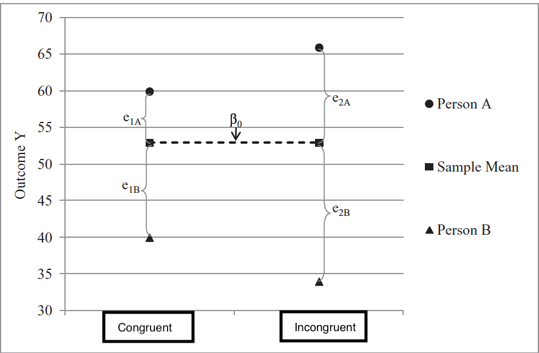

data <- "https://raw.githubusercontent.com/josh-jackson/bayes/master/mlm.csv"
mlm <- read.csv(data) mlm

MLM review
\[{Y}_{i} = b_{0} + b_{1}X_{i} + ... +\epsilon_{i}\]
\[{Y}_{ij} = b_{0} + b_{1}X_{ij} + ... +\epsilon_{ij}\] Where j refers to some clustering or grouping variable and i refers to the observations within j
── Attaching core tidyverse packages ──────────────────────── tidyverse 2.0.0 ──
✔ dplyr 1.1.2 ✔ readr 2.1.4
✔ forcats 1.0.0 ✔ stringr 1.5.0
✔ ggplot2 3.4.3 ✔ tibble 3.2.1
✔ lubridate 1.9.2 ✔ tidyr 1.3.0
✔ purrr 1.0.2
── Conflicts ────────────────────────────────────────── tidyverse_conflicts() ──
✖ dplyr::filter() masks stats::filter()
✖ dplyr::lag() masks stats::lag()
ℹ Use the conflicted package (<http://conflicted.r-lib.org/>) to force all conflicts to become errorsCode
set.seed(114)
mlm %>%
sample_n_of(20, ID) %>%
ggplot(aes(x = week, y = CON, group = ID, fill = ID)) + geom_point(aes(color = factor(ID))) + stat_smooth(aes(color = factor(ID)),method = "lm", se = FALSE) +
xlab("X") + ylab("Y") + theme(legend.position = "none")`geom_smooth()` using formula = 'y ~ x'
Empty model
Level 1 \[{Y}_{ij} = \beta_{0j} + \varepsilon_{ij}\]
Level 2 \[{\beta}_{0j} = \gamma_{00} + U_{0j}\]
\[{U}_{0j} \sim\mathcal{N}(0, \tau_{00}^{2})\] \[{e}_{ij} \sim\mathcal{N}(0, \sigma^{2})\]
Code
mlm %>%
sample_n_of(8, ID) %>%
ggplot(aes(x = week, y = CON, group = ID)) + geom_point(aes(color = factor(ID))) + stat_smooth(aes(color = factor(ID)), method = "lm", formula=y~1, se = FALSE) + xlab("X") + ylab("Y") + theme(legend.position = "none")
\[{Y}_{ij} = \gamma_{00} + U_{0j} + \varepsilon_{ij}\]
Akin to ANOVA if we treat \(U_{0j}\) as between subjects variance & \(\varepsilon_{ij}\) as within subjects variance.
Random and fixed effects
Level 1: \[{Y}_{ij} = \beta_{0j} + \varepsilon_{ij}\]
Level 2: \[{\beta}_{0j} = \gamma_{00} + U_{0j}\] Combined: \[{Y}_{ij} = \gamma_{00} + U_{0j} + \varepsilon_{ij}\]
\(U_{0j}\) is considered a random effect, as it is varies across our grouping
\(\gamma_{00}\) is considered a fixed effect, as it is what is fixed (average) across our grouping
Level 1 predictors
Level 1 is where you have data that repeats within your grouping or clustering data. Is your cluster classrooms? Then students are level 1. Is your cluster people? Then observations are level 1.
\[{Y}_{ij} = \beta_{0j} + \beta_{1j}X_{ij} + \varepsilon_{ij}\] Notice on the subscript of X that these predictors vary across group (j) and within the group (i) So if your grouping (j) is people, then i refers to different observations.
Level 2 takes the parameters at level 1 and decomposes them into a fixed component ( \(\gamma\) ) that reflects the average and, if desired, the individual deviations around that fixed effect (U).
level 1 \[{Y}_{ij} = \beta_{0j} + \beta_{1j}X_{ij} + \varepsilon_{ij}\]
level 2 \[{\beta}_{0j} = \gamma_{00} + U_{0j}\]
\[{\beta}_{1j} = \gamma_{10}\]
Level 1:
\[{Y}_{ij} = \beta_{0j} + \beta_{1j}X_{ij} + \varepsilon_{ij}\] Level 2:
\[{\beta}_{0j} = \gamma_{00} + U_{0j}\]
\[{\beta}_{1j} = \gamma_{10} + U_{1j}\]
Combined \[{Y}_{ij} = \gamma_{00} + \gamma_{10}(X_{ij})+ U_{0j} + U_{1j}(X_{ij}) + \varepsilon_{ij}\]
Can think of a persons score divided up into a fixed component as well as the random component.
\[{\beta}_{16} = \gamma_{10} \pm U_{16}\]
Error structure
The residual structure, where the random effects are again normally distributed with a mean of zero, but this time one must also consider covariance in addition to variance.
\[\begin{pmatrix} {U}_{0j} \\ {U}_{1j} \end{pmatrix} \sim \mathcal{N} \begin{pmatrix} 0, \tau_{00}^{2} & \tau_{01}\\ 0, \tau_{01} & \tau_{10}^{2} \end{pmatrix}\]
Note that it is possible to have a different error structure for the random effects
\[{e}_{ij} \sim \mathcal{N}(0, \sigma^{2})\]
Multiple level 1 predictors
Level 1:
\[{Y}_{ijk} = \beta_{0j} + \beta_{1j}X_{ij} + \beta_{2j}Z_{ik} + \varepsilon_{ijk}\] Level 2:
\[{\beta}_{0j} = \gamma_{00} + U_{0j}\]
\[{\beta}_{1j} = \gamma_{10} + U_{1j}\] \[{\beta}_{2k} = \gamma_{20} + U_{2k}\]
Level 2 predictors
Level 1: \[{Y}_{ij} = \beta_{0j} + \beta_{1j}X_{ij} + \varepsilon_{ij}\] Level 2: \[{\beta}_{0j} = \gamma_{00} + \gamma_{01}G_{j} + U_{0j}\]
\[{\beta}_{1j} = \gamma_{10} + U_{1j}\]
Combined \[{Y}_{ij} = \gamma_{00} + \gamma_{01}G_{j}+ \gamma_{10} (X_{ij}) + U_{0j} + U_{1j}(X_{ij}) + \varepsilon_{ij}\] \[{Y}_{ij} = [\gamma_{00} + \gamma_{01}G_{j}+ U_{0j}] + [(\gamma_{10} + U_{1j})(X_{ij})] + \varepsilon_{ij}\]
Cross level interactions
level 1: \[{Y}_{ij} = \beta_{0j} + \beta_{1j}X_{ij} + \varepsilon_{ij}\] Level 2: \[{\beta}_{0j} = \gamma_{00} + \gamma_{01}G_{j} + U_{0j}\]
\[{\beta}_{1j} = \gamma_{10} + \gamma_{11}G_{j} + U_{1j}\]
\[{Y}_{ij} = \gamma_{00} + \gamma_{01}G_{j}+ \gamma_{10} (X_{ij}) + \gamma_{11}(G_{j}*X{ij}) + U_{0j} + U_{1j}(X{ij}) + \varepsilon_{ij}\]
\[{Y}_{ij} = [\gamma_{00} + U_{0j} +\gamma_{01}G_{j}] + [(\gamma_{10} + \gamma_{11}G_{j}+ U_{1j})(X{ij})] + \varepsilon_{ij}\]
Centering
As a rule, each level-1 predictor is usually really 2 predictor variables. It is important to separate within-group from between group variance. Failing to do so will “smush” between and within variance to level 1.
Example: student SES at level 1, with schools at level 2. Some kids have more money than other kids in their school Some schools have more money than other schools
Fortunately it is easy to separate this
Level 1: \[{Y}_{ij} = \beta_{0j} + \beta_{1j}(X_{ij}- \bar{X_j}) + \varepsilon_{ij}\]
Level 2: \[{\beta}_{0j} = \gamma_{00} + \bar{X_j} + U_{0j}\]
\[{\beta}_{1j} = \gamma_{10} + \bar{X_j} + U_{1j}\]
MLM as default and make it maximum
If you have data like this you should analyze like this! If you don’t, then you are losing information (GEE being a potential exception).
The question often is about which random effects to fit. There are multiple opinions, but mine is to start maximum, and then work downward (ie simplify) if necessary/consistent with theory. It doesn’t really hurt to include them, especially within Bayesian estimation!
MLM intuitions
Anytime you have repeated DVs you should use MLM as opposed to doing aggregation outside the model. While that should be your default, it is helpful to conceptualize why it is helpful.
- Aggregation is bad
- Regressions within regressions (ie coefficients as outcomes)
- Questions at different levels
- Variance decomposition
- Learning from other data through pooling/shrinkage
- Parameters that depend on parameters
Handling multiple DVs?
What if people had more than 1 DV, like we do with time? What do you do with multiple items, multiple trials, multiple ____ ?
Two options: 1. Collapse and average across.
Example
Code
library(tidyverse)
library(broom)
simp<- tribble(
~ID, ~group, ~test.score, ~study,
1,1,5,1,
2,1,7,3,
3,2,4,2,
4,2,6,4,
5,3,3,3,
6,3,5,5,
7,4,2,4,
8,4,4,6,
9,5,1,5,
10,5,3,7)
Could aggragate across group
`geom_smooth()` using formula = 'y ~ x'
`geom_smooth()` using formula = 'y ~ x'
1. Aggregation obscures hypotheses
Between person H1: Do students who study more get better grades?
Within person H2: When a student studies, do they get better grades?
H1 and H2 are independent from one another! Aggregation collapses the two. When you have nested data with many DVs it is important to not aggregate.
#compositeskill
2. Regressions within regressions
Helps to take multilevel and split it into the different levels.
Level 1 is the smallest unit of analysis (students, waves, trials, family members)
Level 2 variables are what level 1 variables are “nested” in (people, schools, counties, families, dyads)
We are going to use level one components to run a regression, all the while level 1 is also estimating a regression. (Coefficents as outcomes)
Stroop example
We calculate stroop scores by looking at repeated trials of congruent vs not congruent. This is dummy coded such that the \(\beta_{1}\) reflects the average stroop effect. How much slower are people in incongruent trials?
\[Y_{i} = \beta_{0} + \beta_{1}X_{1} + \varepsilon_i\]
\[Y_{trials, i} = \beta_{0i} + \beta_{1i}X_{trial,i} + \varepsilon_{trial,i}\]
\[\beta_{0} = \gamma_{00} + U_{0i}\] \[\beta_{1} = \gamma_{10} +\gamma_{11}Age_i+ U_{1i}\]
Our B1 coefficient indexes the stroop effect. However, people differ on this stroop effect. There is some average effect (fixed effect) that people vary around. Each person has some personal \(\beta_1\), which we find using Level 1 data. From there we can also ask questions (with regressions) about that random variable.
People differ on the stroop
Code
example <- read_csv("https://raw.githubusercontent.com/josh-jackson/longitudinal-2021/master/example.csv")Rows: 225 Columns: 50
── Column specification ────────────────────────────────────────────────────────
Delimiter: ","
chr (17): group, Exclude, RSNexclude, RSNexcludeDevDem, PIBpos18, Neuro_Dx,...
dbl (30): ID, time, CON, CON_SAL, CON_SMN7, DAN, DAN_CON, DAN_SAL, DAN_SMN7...
date (3): date, CogDate_0, CCIRtrio_MR_date_0
ℹ Use `spec()` to retrieve the full column specification for this data.
ℹ Specify the column types or set `show_col_types = FALSE` to quiet this message.Code
example$year <- example$week
set.seed(11)
ex.random <- example %>%
dplyr::select(ID) %>%
distinct %>%
sample_n(3)
example2 <-
left_join(ex.random, example) Joining with `by = join_by(ID)`Code
g2<- ggplot(example2,
aes(x = week, y = SMN7, group = ID)) + geom_point() + stat_smooth(method="lm", formula=y~1, se = FALSE) + facet_wrap( ~ID) +
geom_hline(yintercept = .13) + ylab("stroop effect") + xlab("trials") +
geom_label(label="Grand mean ", x=1,y=.13,
label.size = 0.15)
g2
Code
library(tidybayes)
example %>% group_by(ID) %>%
do(avg = tidy(lm(SMN7 ~ 1, data = .))) %>%
unnest(avg) %>%
ggplot(aes(x = estimate)) +
stat_dotsinterval() + ylab("density")
3. Diferent levels
To sum up the first two ways to think about regression, we take a relationship that could be simplified by aggregation, and conduct regressions from regressions. (Regression inception)
The third way is to think of questions at different levels. At level 1 we can ask lower-unit questions e.g., if trials are nested within person, what predicts lengthier trials?
If level 1 is made up of repeated observations, then we can ask level 1/observation level questions like does failure at the trial level impact future trial performance.
At level 2 we can ask broader-unit questions. E.g., is age associated with stroop differences
Often level 2 is between person variables.
Both levels are simple regressions. Level 2 uses coefficients from level 1 as DVs. Level 1 variables are time varying, level 2 variables are time invariant
4. Variance decomposition
For standard regression, we think of error as existing in one big bucket called \(\varepsilon\) . Everything that we do not know goes into that bucket, from measurement error to unmeasured important factors.
For MLMs we will be breaking up ( \(\varepsilon\) ) into multiple buckets. These useful “buckets” (Us) are what we refer to as random/varying effects.
\[Y_{trials, i} = \beta_{0i} + \beta_{1i}X_{trial,i} + \varepsilon_{trial}\] \[\beta_{0} = \gamma_{00} + U_{0i}\] \[\beta_{1} = \gamma_{10} +\gamma_{11}Z_i+ U_{1i}\]

Assume a simple intercept only model where we aggregate across types of trials.

A MLM intercept only model takes what was previously chalked up to error and reassigns it into person specific “buckets”
Model for the means (like normal) and now we have a model for the variance (random effects!)
We will treat random effects as variables themselves e.g. individual differences in reaction time or stroop effect. They index how much people DIFFER on some effect. e.g. does everyone show the same stroop effect?
We can relate the random effects to other random effects e.g., do people who show an effect have a slower reaction time?
5. Shrinkage/partial pooling
We treat our group variable as coming from a population. All groups are alike (because they are from the same population), but different in their own way. Because of this it is helpful to use information from other groups to help make predictions.
We do this in standard regression where we make predictions based on values from the whole dataset (not just binned Xs). A similar analogy for MLM is running a regression for each group. We want to pool as this leads to better predictions as we are not overfitting our data!
If we take our simplified stroop effect model (an empty model)
\[Y_{trials, i} = \beta_{0i} + \varepsilon_{trial}\]
\[\beta_{0} = \gamma_{00} + U_{0i}\]
Where does \(U_{0i}\) come from? If we calculated each by hand, through taking the average reaction time for a person i and subtracting that from the grand mean reaction time, would that equal \(U_{0i}\) ?
Complete, partial and no pooling
Complete assumes everyone is the same, with \(U_{0i}\) being zero for everyone.
No pooling is if we calculate every person’s effect with a regression, subtracting out he grand mean average.
Partial pooling is in the middle, a weighted average between the two. For those with fewer trials there is less information for a particular individual, thus the complete pooling estimate will be given more weight. If someone has a lot of data, there weighted average is closer to no pooling.
Partial pooling prevents both over and under fitting of your data, leading to increased out of sample predictions.
Complete pooling
Ignores any dependency. Doesn’t learn from others, assumes everyone is the same. Underfits the model.
Code
ggplot(mlm, aes(x = week, y = SMN7)) + geom_point() + stat_smooth(method="lm") +ylab("test score") + xlab("study") + theme(axis.ticks.y = element_blank(),
axis.text.y = element_blank())`geom_smooth()` using formula = 'y ~ x'Warning: Removed 9 rows containing non-finite values (`stat_smooth()`).Warning: Removed 9 rows containing missing values (`geom_point()`).
No Pooling
Everyone is unqiue and we cannot learn from others. Leads to overfitting
Code
ggplot(mlm, aes(x = week, y = SMN7, group = ID)) + geom_line() + geom_point() + facet_wrap( ~ ID) +ylab("test score") + xlab("study")Warning: Removed 9 rows containing missing values (`geom_line()`).Warning: Removed 9 rows containing missing values (`geom_point()`).
Partial pooling aka shrinkage aka regularization
Code
library(viridis)Loading required package: viridisLiteCode
ggplot(mlm, aes(x = week, y = SMN7, group = ID, colour = ID)) + stat_smooth(method = "lm", se = FALSE, alpha = .5) +scale_color_viridis()+ ylab("test score") + xlab("study amount") + geom_point()`geom_smooth()` using formula = 'y ~ x'Warning: Removed 9 rows containing non-finite values (`stat_smooth()`).Warning: Removed 9 rows containing missing values (`geom_point()`).
Partial pooling aka shrinkage provides the optimal amount of learning from others. Assumes people come from the same distribution but are distinct from one another.
If you have a little data, then the safe bet is to look at the average. If you have a lot of data, you can ignore others.
In a way, this is similar to Bayesian reasoning where learning is based on how much information you have about a person with other people serving as a prior.
6. Parameters that depend on other parameters
\[\text{y}_{ij} \sim \operatorname{Normal}(\mu_i, \sigma)\] \[\mu_i = \beta_{0[j]}\]
\[\beta_{0[j]} \sim \operatorname{Normal}({\bar \mu}, \sigma_0)\] \[{\bar \mu} \sim {\operatorname{Normal}(0, 1.5)}\] \[\sigma_0 \sim {\operatorname{Exponential}(1)}\] \[\sigma \sim {\operatorname{Exponential}(1)}\]
Hyperprior
We now have a prior for the population of effects. We typically put a prior directly on parameters. Here, because are using a multilevel model, we are interested in the population of intercepts, not just a single intercept.
Intercept in simple regression –> a (prior/posterior) distribution of possible scores
Intercept in mlm –> a distribution of group/clusters of intercepts. The population we are sampling from can have a distribution (mu, sigma), and that distribution is different from the observed distribution of mu (or sigma)
Parameters that depend on parameters
Code
# normal density
library(beyonce)
library(patchwork)
bp <- beyonce_palette(128, n = 9, type = "continuous")
p1 <-
tibble(x = seq(from = -3, to = 3, by = .1)) %>%
ggplot(aes(x = x, ymin = 0, ymax = (dnorm(x)) / max(dnorm(x)))) +
geom_ribbon(fill = bp[6], size = 0) +
annotate(geom = "text",
x = 0, y = .2,
label = "normal",
size = 7, color = bp[1]) +
annotate(geom = "text",
x = c(0, 1.5), y = .6,
label = c("italic(M)[0]", "italic(S)[0]"),
size = 7, color = bp[1], family = "Times", parse = T) +
scale_x_continuous(expand = c(0, 0)) +
theme_void() +
theme(axis.line.x = element_line(size = 0.5, color = bp[1]))Warning: Using `size` aesthetic for lines was deprecated in ggplot2 3.4.0.
ℹ Please use `linewidth` instead.Warning: The `size` argument of `element_line()` is deprecated as of ggplot2 3.4.0.
ℹ Please use the `linewidth` argument instead.Code
# half-normal density
p2 <-
tibble(x = seq(from = 0, to = 3, by = .01)) %>%
ggplot(aes(x = x, ymin = 0, ymax = (dnorm(x)) / max(dnorm(x)))) +
geom_ribbon(fill = bp[6], size = 0) +
annotate(geom = "text",
x = 1.5, y = .2,
label = "half-normal",
size = 7, color = bp[1]) +
annotate(geom = "text",
x = 1.5, y = .6,
label = "0*','*~italic(S)[sigma][0]",
size = 7, color = bp[1], family = "Times", parse = T) +
scale_x_continuous(expand = c(0, 0)) +
theme_void() +
theme(axis.line.x = element_line(size = 0.5, color = bp[1]))
my_arrow <- arrow(angle = 20, length = unit(0.35, "cm"), type = "closed")
# a second normal density
p3 <-
tibble(x = seq(from = -3, to = 3, by = .1)) %>%
ggplot(aes(x = x, ymin = 0, ymax = (dnorm(x)) / max(dnorm(x)))) +
geom_ribbon(fill = bp[6], size = 0) +
annotate(geom = "text",
x = 0, y = .2,
label = "normal",
size = 7, color = bp[1]) +
annotate(geom = "text",
x = c(0, 1.5), y = .6,
label = c("italic(M)[1]", "italic(S)[1]"),
size = 7, color = bp[1], family = "Times", parse = T) +
scale_x_continuous(expand = c(0, 0)) +
theme_void() +
theme(axis.line.x = element_line(size = 0.5, color = bp[1]))
# a second half-normal density
p4 <-
tibble(x = seq(from = 0, to = 3, by = .01)) %>%
ggplot(aes(x = x, ymin = 0, ymax = (dnorm(x)) / max(dnorm(x)))) +
geom_ribbon(fill = bp[6], size = 0) +
annotate(geom = "text",
x = 1.5, y = .2,
label = "half-normal",
size = 7, color = bp[1]) +
annotate(geom = "text",
x = 1.5, y = .6,
label = "0*','*~italic(S)[sigma][1]",
size = 7, color = bp[1], family = "Times", parse = T) +
scale_x_continuous(expand = c(0, 0)) +
theme_void() +
theme(axis.line.x = element_line(size = 0.5, color = bp[1]))
# four annotated arrows
p5 <-
tibble(x = c(.05, .35, .65, .95),
y = c(1, 1, 1, 1),
xend = c(.32, .4, .65, .72),
yend = c(.2, .2, .2, .2)) %>%
ggplot(aes(x = x, xend = xend,
y = y, yend = yend)) +
geom_segment(arrow = my_arrow, color = bp[1]) +
annotate(geom = "text",
x = c(.15, .35, .625, .78), y = .55,
label = "'~'",
size = 10, color = bp[1], family = "Times", parse = T) +
xlim(0, 1) +
theme_void()
# third normal density
p6 <-
tibble(x = seq(from = -3, to = 3, by = .1)) %>%
ggplot(aes(x = x, ymin = 0, ymax = (dnorm(x)) / max(dnorm(x)))) +
geom_ribbon(fill = bp[6], size = 0) +
annotate(geom = "text",
x = 0, y = .2,
label = "normal",
size = 7, color = bp[1]) +
annotate(geom = "text",
x = c(0, 1.5), y = .6,
label = c("mu[0]", "sigma[0]"),
size = 7, color = bp[1], family = "Times", parse = T) +
scale_x_continuous(expand = c(0, 0)) +
theme_void() +
theme(axis.line.x = element_line(size = 0.5, color = bp[1]))
# fourth normal density
p7 <-
tibble(x = seq(from = -3, to = 3, by = .1)) %>%
ggplot(aes(x = x, ymin = 0, ymax = (dnorm(x)) / max(dnorm(x)))) +
geom_ribbon(fill = bp[6], size = 0) +
annotate(geom = "text",
x = 0, y = .2,
label = "normal",
size = 7, color = bp[1]) +
annotate(geom = "text",
x = c(0, 1.5), y = .6,
label = c("mu[1]", "sigma[1]"),
size = 7, color = bp[1], family = "Times", parse = T) +
scale_x_continuous(expand = c(0, 0)) +
theme_void() +
theme(axis.line.x = element_line(size = 0.5, color = bp[1]))
# two annotated arrows
p8 <-
tibble(x = c(.18, .82),
y = c(1, 1),
xend = c(.36, .55),
yend = c(0, 0)) %>%
ggplot(aes(x = x, xend = xend,
y = y, yend = yend)) +
geom_segment(arrow = my_arrow, color = bp[1]) +
annotate(geom = "text",
x = c(.18, .33, .64, .77), y = .55,
label = c("'~'", "italic(j)", "'~'", "italic(j)"),
size = c(10, 7, 10, 7),
color = bp[1], family = "Times", parse = T) +
xlim(0, 1) +
theme_void()
# exponential density
p9 <-
tibble(x = seq(from = 0, to = 1, by = .01)) %>%
ggplot(aes(x = x, ymin = 0, ymax = (dexp(x, 2) / max(dexp(x, 2))))) +
geom_ribbon(fill = bp[6], size = 0) +
annotate(geom = "text",
x = .5, y = .2,
label = "exp",
size = 7, color = bp[1]) +
annotate(geom = "text",
x = .5, y = .6,
label = "italic(K)",
size = 7, color = bp[1], family = "Times", parse = T) +
scale_x_continuous(expand = c(0, 0)) +
theme_void() +
theme(axis.line.x = element_line(size = 0.5, color = bp[1]))
# likelihood formula
p10 <-
tibble(x = .5,
y = .25,
label = "beta[0][italic(j)]+beta[1][italic(j)]*italic(x)[italic(i)*'|'*italic(j)]") %>%
ggplot(aes(x = x, y = y, label = label)) +
geom_text(size = 7, color = bp[1], parse = T, family = "Times") +
scale_x_continuous(expand = c(0, 0), limits = c(0, 1)) +
ylim(0, 1) +
theme_void()
# half-normal density
p11 <-
tibble(x = seq(from = 0, to = 3, by = .01)) %>%
ggplot(aes(x = x, ymin = 0, ymax = (dnorm(x)) / max(dnorm(x)))) +
geom_ribbon(fill = bp[6], size = 0) +
annotate(geom = "text",
x = 1.5, y = .2,
label = "half-normal",
size = 7, color = bp[1]) +
annotate(geom = "text",
x = 1.5, y = .6,
label = "0*','*~italic(S)[sigma]",
size = 7, color = bp[1], family = "Times", parse = T) +
scale_x_continuous(expand = c(0, 0)) +
theme_void() +
theme(axis.line.x = element_line(size = 0.5, color = bp[1]))
# four annotated arrows
p12 <-
tibble(x = c(.43, .43, 1.5, 2.5),
y = c(1, .55, 1, 1),
xend = c(.43, 1.225, 1.5, 1.75),
yend = c(.8, .15, .2, .2)) %>%
ggplot(aes(x = x, xend = xend,
y = y, yend = yend)) +
geom_segment(arrow = my_arrow, color = bp[1]) +
annotate(geom = "text",
x = c(.3, .7, 1.38, 2), y = c(.92, .22, .65, .6),
label = c("'~'", "'='", "'='", "'~'"),
size = 10,
color = bp[1], family = "Times", parse = T) +
annotate(geom = "text",
x = .43, y = .7,
label = "nu*minute+1",
size = 7, color = bp[1], family = "Times", parse = T) +
xlim(0, 3) +
theme_void()
# student-t density
p13 <-
tibble(x = seq(from = -3, to = 3, by = .1)) %>%
ggplot(aes(x = x, ymin = 0, ymax = (dt(x, 3) / max(dt(x, 3))))) +
geom_ribbon(fill = bp[6], size = 0) +
annotate(geom = "text",
x = 0, y = .2,
label = "student t",
size = 7, color = bp[1]) +
annotate(geom = "text",
x = 0, y = .6,
label = "nu~~mu[italic(i)*'|'*italic(j)]~~sigma",
size = 7, color = bp[1], family = "Times", parse = T) +
scale_x_continuous(expand = c(0, 0)) +
theme_void() +
theme(axis.line.x = element_line(size = 0.5, color = bp[1]))
# the final annotated arrow
p14 <-
tibble(x = c(.375, .625),
y = c(1/3, 1/3),
label = c("'~'", "italic(i)*'|'*italic(j)")) %>%
ggplot(aes(x = x, y = y, label = label)) +
geom_text(size = c(10, 7), color = bp[1], parse = T, family = "Times") +
geom_segment(x = .5, xend = .5,
y = 1, yend = 0,
color = bp[1], arrow = my_arrow) +
xlim(0, 1) +
theme_void()
# some text
p15 <-
tibble(x = .5,
y = .5,
label = "italic(y)[italic(i)*'|'*italic(j)]") %>%
ggplot(aes(x = x, y = y, label = label)) +
geom_text(size = 7, color = bp[1], parse = T, family = "Times") +
xlim(0, 1) +
theme_void()
# define the layout
layout <- c(
area(t = 1, b = 2, l = 1, r = 3),
area(t = 1, b = 2, l = 5, r = 7),
area(t = 1, b = 2, l = 9, r = 11),
area(t = 1, b = 2, l = 13, r = 15),
area(t = 4, b = 5, l = 5, r = 7),
area(t = 4, b = 5, l = 9, r = 11),
area(t = 3, b = 4, l = 1, r = 15),
area(t = 7, b = 8, l = 3, r = 5),
area(t = 7, b = 8, l = 7, r = 9),
area(t = 7, b = 8, l = 11, r = 13),
area(t = 6, b = 7, l = 5, r = 11),
area(t = 10, b = 11, l = 7, r = 9),
area(t = 9, b = 10, l = 3, r = 13),
area(t = 12, b = 12, l = 7, r = 9),
area(t = 13, b = 13, l = 7, r = 9)
)
# combine and plot!
(p1 + p2 + p3 + p4 + p6 + p7 + p5 + p9 + p10 + p11 + p8 + p13 + p12 + p14 + p15) +
plot_layout(design = layout) &
ylim(0, 1) &
theme(plot.margin = margin(0, 5.5, 0, 5.5))Scale for y is already present.
Adding another scale for y, which will replace the existing scale.
If we are estimating a mean, we can divide that up into two priors:
A distribution of our best guess at the mean e.g., N(3,.5) means I am very confident in my guess vs N(3,50). This is all about the mean.
A distribution that represents the spread around that mean e.g., N(0,1) suggests small spread vs (0,100) suggest people may differ a lot (Even though the distribution has the same mean).
Fixed effect describes #1 whereas random effects describe #2
library(brms)Loading required package: RcppLoading 'brms' package (version 2.20.1). Useful instructions
can be found by typing help('brms'). A more detailed introduction
to the package is available through vignette('brms_overview').
Attaching package: 'brms'The following objects are masked from 'package:tidybayes':
dstudent_t, pstudent_t, qstudent_t, rstudent_tThe following object is masked from 'package:stats':
armlm.1 <-
brm(family = gaussian,
CON ~ 1 + (1 | ID),
prior = c(prior(normal(0, 1.5), class = Intercept),
prior(normal(0, 1.5), class = sd),
prior(exponential(1), class = sigma)),
iter = 5000, warmup = 1000, chains = 4, cores = 4,
sample_prior = "yes",
data = mlm,
backend = "cmdstanr",
file = "mlm.1")If you think about parameters you are estimating the number of priors are simple. But in terms of what those priors represent, they are providing a prior on a prior. The intercept and the SD are both providing estimates of means. We could model this 1 parameter (anova or index coded) or 2 (mlm)
summary(mlm.1) Family: gaussian
Links: mu = identity; sigma = identity
Formula: CON ~ 1 + (1 | ID)
Data: mlm (Number of observations: 225)
Draws: 4 chains, each with iter = 5000; warmup = 1000; thin = 1;
total post-warmup draws = 16000
Group-Level Effects:
~ID (Number of levels: 91)
Estimate Est.Error l-95% CI u-95% CI Rhat Bulk_ESS Tail_ESS
sd(Intercept) 0.06 0.01 0.05 0.07 1.00 5431 8578
Population-Level Effects:
Estimate Est.Error l-95% CI u-95% CI Rhat Bulk_ESS Tail_ESS
Intercept 0.19 0.01 0.18 0.20 1.00 7203 10549
Family Specific Parameters:
Estimate Est.Error l-95% CI u-95% CI Rhat Bulk_ESS Tail_ESS
sigma 0.05 0.00 0.04 0.05 1.00 9902 11403
Draws were sampled using sample(hmc). For each parameter, Bulk_ESS
and Tail_ESS are effective sample size measures, and Rhat is the potential
scale reduction factor on split chains (at convergence, Rhat = 1).Notice we have one less parameter we are estimating.
mlm.2 <-
brm(family = gaussian,
CON ~ 1 ,
prior = c(prior(normal(0, 1.5), class = Intercept),
prior(exponential(1), class = sigma)),
iter = 5000, warmup = 1000, chains = 4, cores = 4,
sample_prior = "yes",
data = mlm,
backend = "cmdstanr",
file = "mlm.2")summary(mlm.2) Family: gaussian
Links: mu = identity; sigma = identity
Formula: CON ~ 1
Data: mlm (Number of observations: 225)
Draws: 4 chains, each with iter = 5000; warmup = 1000; thin = 1;
total post-warmup draws = 16000
Population-Level Effects:
Estimate Est.Error l-95% CI u-95% CI Rhat Bulk_ESS Tail_ESS
Intercept 0.19 0.00 0.18 0.20 1.00 16615 11267
Family Specific Parameters:
Estimate Est.Error l-95% CI u-95% CI Rhat Bulk_ESS Tail_ESS
sigma 0.07 0.00 0.07 0.08 1.00 10474 9132
Draws were sampled using sample(hmc). For each parameter, Bulk_ESS
and Tail_ESS are effective sample size measures, and Rhat is the potential
scale reduction factor on split chains (at convergence, Rhat = 1).mlm.1 <- add_criterion(mlm.1, "loo")
mlm.2 <- add_criterion(mlm.2, "loo")
loo_compare(mlm.1, mlm.2, criterion = "loo") elpd_diff se_diff
mlm.1 0.0 0.0
mlm.2 -58.1 8.8 Notice how the intercept is the same in each of these models. Even the CIs. Conceptually they are different though. The intercept is directly modeled in the standard regression. In the MLM it is better thought of as the map of the distribution of random effects.
The population is larger than what we have. This is true for almost anything we do. We sample paradigms, we sample people, we usually never have a full population under our study. Don’t we want to model that variation?
\[\text{y}_{ij} \sim \operatorname{Normal}(\mu_i, \sigma)\] \[\mu_i = \beta_{0[j]}\] This parenthesis indicates we have varying intercepts that vary over individual j. Each parameter estimated needs a prior. \[\beta_{0[j]} \sim \operatorname{Normal}({\bar \mu}, \sigma_0)\] \[{\bar \mu} \sim {\operatorname{Normal}(0, 1.5)}\] \[\sigma_0 \sim {\operatorname{Exponential}(1)}\] \[\sigma \sim {\operatorname{Exponential}(1)}\]
Parameters that depend on parameters

With mlm we treated means as coming from a population of means. And thus there was a best guess of the mean (intercept) and variation around that guess (SD). With anova we ignored the variation. But we could, in bayes, still examine that variation. Lets fit an index model, where each person gets a mean.
mlm$ID.f <- as.factor(mlm$ID)
mlm.id <-
brm(family = gaussian,
CON ~ 0 + ID.f ,
iter = 4000, warmup = 1000, chains = 2, cores = 4,
data = mlm,
backend = "cmdstanr",
file = "mlm.id")This is similar to a “fixed effect” model, something that is popular in econometrics. It, in contrast to the random effect model, does not model random effects.
Why do we want to model random effects? Variance decomposition which leads to increased power.
Also, 1. we can include group/cluster level predictors, which fixed effect cannot. 2. it makes an assumption about whether the clusters are random or not. Psych they are almost always random (people, site, orgs) whereas for econometrics they aren’t (country, state).
summary(mlm.id) Family: gaussian
Links: mu = identity; sigma = identity
Formula: CON ~ 0 + ID.f
Data: mlm (Number of observations: 225)
Draws: 2 chains, each with iter = 4000; warmup = 1000; thin = 1;
total post-warmup draws = 6000
Population-Level Effects:
Estimate Est.Error l-95% CI u-95% CI Rhat Bulk_ESS Tail_ESS
ID.f6 0.19 0.03 0.14 0.24 1.00 12843 4563
ID.f29 0.12 0.03 0.06 0.19 1.00 12890 4381
ID.f34 0.11 0.03 0.04 0.17 1.00 11125 3396
ID.f36 0.16 0.03 0.09 0.22 1.00 10520 4353
ID.f37 0.19 0.03 0.13 0.24 1.00 13971 4513
ID.f48 0.22 0.03 0.16 0.28 1.00 11877 3672
ID.f53 0.19 0.03 0.12 0.25 1.00 12973 3832
ID.f54 0.25 0.03 0.19 0.30 1.00 10693 4209
ID.f58 0.24 0.03 0.18 0.29 1.00 11734 3630
ID.f61 0.09 0.03 0.02 0.15 1.00 11095 4131
ID.f66 0.24 0.03 0.18 0.30 1.00 10702 3905
ID.f67 0.20 0.02 0.15 0.25 1.00 12121 4120
ID.f69 0.21 0.03 0.14 0.27 1.00 11762 4351
ID.f71 0.06 0.03 0.00 0.11 1.00 12658 4033
ID.f74 0.20 0.03 0.15 0.26 1.00 12824 4541
ID.f75 0.27 0.03 0.21 0.34 1.00 13089 4330
ID.f76 0.10 0.03 0.05 0.15 1.00 11192 4021
ID.f78 0.24 0.03 0.19 0.30 1.00 13957 4076
ID.f79 0.13 0.03 0.06 0.20 1.00 11956 3914
ID.f80 0.14 0.03 0.07 0.20 1.00 10268 4029
ID.f81 0.24 0.03 0.19 0.30 1.00 11554 4247
ID.f82 0.33 0.02 0.28 0.37 1.00 10263 4261
ID.f85 0.16 0.03 0.09 0.22 1.00 12539 4150
ID.f86 0.12 0.03 0.05 0.18 1.00 10475 4054
ID.f87 0.11 0.03 0.05 0.18 1.00 13807 4300
ID.f89 0.14 0.03 0.08 0.19 1.00 11419 4313
ID.f91 0.17 0.03 0.12 0.23 1.00 12721 4282
ID.f92 0.20 0.03 0.15 0.26 1.00 11862 4418
ID.f93 0.25 0.03 0.20 0.31 1.00 12602 3651
ID.f94 0.12 0.03 0.06 0.17 1.00 11041 3875
ID.f96 0.23 0.03 0.16 0.30 1.00 12876 3812
ID.f97 0.25 0.02 0.20 0.29 1.00 10826 4330
ID.f98 0.14 0.02 0.09 0.19 1.00 9621 4076
ID.f99 0.18 0.02 0.13 0.23 1.00 12074 4029
ID.f101 0.25 0.03 0.19 0.30 1.00 13398 4000
ID.f102 0.19 0.02 0.14 0.23 1.00 11928 4485
ID.f103 0.15 0.03 0.09 0.22 1.00 12408 4337
ID.f104 0.17 0.03 0.11 0.24 1.00 11784 4181
ID.f105 0.16 0.03 0.11 0.22 1.00 10588 3372
ID.f106 0.20 0.03 0.14 0.25 1.00 12531 4475
ID.f110 0.18 0.03 0.13 0.24 1.00 11621 3912
ID.f112 0.09 0.03 0.04 0.15 1.00 12749 4372
ID.f114 0.13 0.03 0.08 0.19 1.00 13131 4640
ID.f115 0.14 0.03 0.09 0.20 1.00 11539 4158
ID.f116 0.14 0.03 0.09 0.20 1.00 11704 4916
ID.f120 0.35 0.03 0.29 0.42 1.00 11116 4498
ID.f122 0.17 0.03 0.12 0.22 1.00 13135 4066
ID.f125 0.20 0.03 0.14 0.25 1.00 10812 4172
ID.f127 0.23 0.03 0.17 0.28 1.00 12523 4304
ID.f129 0.13 0.03 0.06 0.20 1.00 12336 3775
ID.f135 0.30 0.03 0.24 0.35 1.00 11249 4325
ID.f136 0.29 0.03 0.24 0.34 1.00 12910 4060
ID.f137 0.29 0.03 0.23 0.36 1.00 11799 3709
ID.f140 0.13 0.03 0.06 0.19 1.00 12368 4573
ID.f141 0.19 0.03 0.13 0.26 1.00 11270 4112
ID.f142 0.18 0.03 0.11 0.24 1.00 11910 3756
ID.f143 0.31 0.03 0.25 0.38 1.00 11943 4100
ID.f144 0.17 0.03 0.11 0.24 1.00 10872 4346
ID.f146 0.21 0.03 0.14 0.28 1.00 12834 3844
ID.f149 0.23 0.03 0.16 0.30 1.00 13499 4048
ID.f150 0.20 0.03 0.14 0.27 1.00 11754 4112
ID.f152 0.22 0.03 0.16 0.29 1.00 12196 3979
ID.f153 0.15 0.03 0.08 0.21 1.00 11960 4349
ID.f155 0.14 0.03 0.08 0.21 1.00 12799 4708
ID.f156 0.14 0.03 0.08 0.19 1.00 11804 4149
ID.f159 0.12 0.03 0.06 0.19 1.00 12160 3926
ID.f160 0.18 0.03 0.11 0.24 1.00 12500 4331
ID.f162 0.39 0.03 0.34 0.45 1.00 11956 4512
ID.f163 0.13 0.03 0.07 0.20 1.00 13493 4058
ID.f165 0.20 0.03 0.13 0.26 1.00 10433 3473
ID.f167 0.13 0.03 0.06 0.20 1.00 11378 3996
ID.f169 0.24 0.03 0.18 0.31 1.00 10844 3478
ID.f171 0.23 0.03 0.16 0.29 1.00 11715 4200
ID.f174 0.26 0.03 0.20 0.33 1.00 12807 4506
ID.f182 0.19 0.03 0.12 0.25 1.00 14151 4268
ID.f187 0.06 0.03 -0.00 0.13 1.00 11480 3807
ID.f189 0.22 0.03 0.16 0.29 1.00 10615 3896
ID.f190 0.13 0.03 0.06 0.19 1.00 11900 4110
ID.f193 0.21 0.03 0.14 0.27 1.00 11690 3406
ID.f194 0.12 0.03 0.05 0.19 1.00 11769 4036
ID.f201 0.19 0.03 0.12 0.25 1.00 12564 4307
ID.f204 0.29 0.03 0.22 0.35 1.00 11331 4479
ID.f205 0.19 0.03 0.13 0.26 1.00 12142 4243
ID.f208 0.20 0.03 0.14 0.27 1.00 11908 4093
ID.f209 0.21 0.03 0.15 0.28 1.00 12056 4303
ID.f211 0.14 0.03 0.07 0.21 1.00 12298 4843
ID.f214 0.28 0.03 0.21 0.34 1.00 11659 4294
ID.f219 0.23 0.03 0.16 0.30 1.00 13161 3850
ID.f222 0.14 0.03 0.07 0.20 1.00 11313 4140
ID.f223 0.17 0.03 0.10 0.23 1.00 12990 4250
ID.f229 0.14 0.03 0.07 0.21 1.00 11559 4131
Family Specific Parameters:
Estimate Est.Error l-95% CI u-95% CI Rhat Bulk_ESS Tail_ESS
sigma 0.05 0.00 0.04 0.05 1.00 3458 3621
Draws were sampled using sample(hmc). For each parameter, Bulk_ESS
and Tail_ESS are effective sample size measures, and Rhat is the potential
scale reduction factor on split chains (at convergence, Rhat = 1).posterior_samples(mlm.id) %>%
pivot_longer(b_ID.f6:b_ID.f91, names_to="ID") %>%
summarise(mean=mean(value), sd=sd(value))# A tibble: 1 × 2
mean sd
<dbl> <dbl>
1 0.177 0.0698Partial pooling/Shrinkage
\(\sigma_0\) (our random effect) can turn on/off/adjust shrinkage.
Setting SD to zero says everyone is the same. Infinite SD says all groups are unrelated (no pooling). In the middle gives you partial pooling.
We use our prior of \(\sigma_0\) plus our data to get an estimate of \(\beta_{0[j]}\). This is how we accurately partial pool.
Partial pooling/Shrinkage
\[\text{y}_{ij} \sim \operatorname{Normal}(\mu_i, \sigma_i)\]
\[\mu_i = \beta_{0[i]}\]
\[\beta_{0[j]} \sim \operatorname{Normal}({\bar \mu}, \sigma_0)\] \[{\bar \mu} \sim {\operatorname{Normal}(0, 1.5)}\]
\[\sigma_0 \sim {\operatorname{Normal}(0, 1.5)}\]
\[\sigma \sim {\operatorname{Exponential}(1)}\]
working with mlm posterior
summary(mlm.1) Family: gaussian
Links: mu = identity; sigma = identity
Formula: CON ~ 1 + (1 | ID)
Data: mlm (Number of observations: 225)
Draws: 4 chains, each with iter = 5000; warmup = 1000; thin = 1;
total post-warmup draws = 16000
Group-Level Effects:
~ID (Number of levels: 91)
Estimate Est.Error l-95% CI u-95% CI Rhat Bulk_ESS Tail_ESS
sd(Intercept) 0.06 0.01 0.05 0.07 1.00 5431 8578
Population-Level Effects:
Estimate Est.Error l-95% CI u-95% CI Rhat Bulk_ESS Tail_ESS
Intercept 0.19 0.01 0.18 0.20 1.00 7203 10549
Family Specific Parameters:
Estimate Est.Error l-95% CI u-95% CI Rhat Bulk_ESS Tail_ESS
sigma 0.05 0.00 0.04 0.05 1.00 9902 11403
Draws were sampled using sample(hmc). For each parameter, Bulk_ESS
and Tail_ESS are effective sample size measures, and Rhat is the potential
scale reduction factor on split chains (at convergence, Rhat = 1).library(tidybayes)
get_variables(mlm.1) [1] "b_Intercept" "sd_ID__Intercept" "sigma"
[4] "r_ID[6,Intercept]" "r_ID[29,Intercept]" "r_ID[34,Intercept]"
[7] "r_ID[36,Intercept]" "r_ID[37,Intercept]" "r_ID[48,Intercept]"
[10] "r_ID[53,Intercept]" "r_ID[54,Intercept]" "r_ID[58,Intercept]"
[13] "r_ID[61,Intercept]" "r_ID[66,Intercept]" "r_ID[67,Intercept]"
[16] "r_ID[69,Intercept]" "r_ID[71,Intercept]" "r_ID[74,Intercept]"
[19] "r_ID[75,Intercept]" "r_ID[76,Intercept]" "r_ID[78,Intercept]"
[22] "r_ID[79,Intercept]" "r_ID[80,Intercept]" "r_ID[81,Intercept]"
[25] "r_ID[82,Intercept]" "r_ID[85,Intercept]" "r_ID[86,Intercept]"
[28] "r_ID[87,Intercept]" "r_ID[89,Intercept]" "r_ID[91,Intercept]"
[31] "r_ID[92,Intercept]" "r_ID[93,Intercept]" "r_ID[94,Intercept]"
[34] "r_ID[96,Intercept]" "r_ID[97,Intercept]" "r_ID[98,Intercept]"
[37] "r_ID[99,Intercept]" "r_ID[101,Intercept]" "r_ID[102,Intercept]"
[40] "r_ID[103,Intercept]" "r_ID[104,Intercept]" "r_ID[105,Intercept]"
[43] "r_ID[106,Intercept]" "r_ID[110,Intercept]" "r_ID[112,Intercept]"
[46] "r_ID[114,Intercept]" "r_ID[115,Intercept]" "r_ID[116,Intercept]"
[49] "r_ID[120,Intercept]" "r_ID[122,Intercept]" "r_ID[125,Intercept]"
[52] "r_ID[127,Intercept]" "r_ID[129,Intercept]" "r_ID[135,Intercept]"
[55] "r_ID[136,Intercept]" "r_ID[137,Intercept]" "r_ID[140,Intercept]"
[58] "r_ID[141,Intercept]" "r_ID[142,Intercept]" "r_ID[143,Intercept]"
[61] "r_ID[144,Intercept]" "r_ID[146,Intercept]" "r_ID[149,Intercept]"
[64] "r_ID[150,Intercept]" "r_ID[152,Intercept]" "r_ID[153,Intercept]"
[67] "r_ID[155,Intercept]" "r_ID[156,Intercept]" "r_ID[159,Intercept]"
[70] "r_ID[160,Intercept]" "r_ID[162,Intercept]" "r_ID[163,Intercept]"
[73] "r_ID[165,Intercept]" "r_ID[167,Intercept]" "r_ID[169,Intercept]"
[76] "r_ID[171,Intercept]" "r_ID[174,Intercept]" "r_ID[182,Intercept]"
[79] "r_ID[187,Intercept]" "r_ID[189,Intercept]" "r_ID[190,Intercept]"
[82] "r_ID[193,Intercept]" "r_ID[194,Intercept]" "r_ID[201,Intercept]"
[85] "r_ID[204,Intercept]" "r_ID[205,Intercept]" "r_ID[208,Intercept]"
[88] "r_ID[209,Intercept]" "r_ID[211,Intercept]" "r_ID[214,Intercept]"
[91] "r_ID[219,Intercept]" "r_ID[222,Intercept]" "r_ID[223,Intercept]"
[94] "r_ID[229,Intercept]" "prior_Intercept" "prior_sigma"
[97] "prior_sd_ID" "lprior" "lp__"
[100] "accept_stat__" "treedepth__" "stepsize__"
[103] "divergent__" "n_leapfrog__" "energy__" mlm.1 %>%
spread_draws(r_ID[ID, term]) # A tibble: 1,456,000 × 6
# Groups: ID, term [91]
ID term r_ID .chain .iteration .draw
<int> <chr> <dbl> <int> <int> <int>
1 6 Intercept 0.00486 1 1 1
2 6 Intercept 0.00189 1 2 2
3 6 Intercept 0.0203 1 3 3
4 6 Intercept -0.0463 1 4 4
5 6 Intercept 0.0358 1 5 5
6 6 Intercept -0.0305 1 6 6
7 6 Intercept 0.0108 1 7 7
8 6 Intercept 0.00562 1 8 8
9 6 Intercept 0.00230 1 9 9
10 6 Intercept 0.0235 1 10 10
# ℹ 1,455,990 more rows16000 samples (4 chains * 4k iterations) * 91 people
mlm.1 %>%
spread_draws(r_ID[ID]) # A tibble: 1,456,000 × 5
# Groups: ID [91]
ID r_ID .chain .iteration .draw
<int> <dbl> <int> <int> <int>
1 6 0.00486 1 1 1
2 6 0.00189 1 2 2
3 6 0.0203 1 3 3
4 6 -0.0463 1 4 4
5 6 0.0358 1 5 5
6 6 -0.0305 1 6 6
7 6 0.0108 1 7 7
8 6 0.00562 1 8 8
9 6 0.00230 1 9 9
10 6 0.0235 1 10 10
# ℹ 1,455,990 more rowsmlm.1 %>%
spread_draws(r_ID[ID, term]) %>%
median_qi()# A tibble: 91 × 8
ID term r_ID .lower .upper .width .point .interval
<int> <chr> <dbl> <dbl> <dbl> <dbl> <chr> <chr>
1 6 Intercept 0.000127 -0.0495 0.0492 0.95 median qi
2 29 Intercept -0.0482 -0.106 0.00947 0.95 median qi
3 34 Intercept -0.0614 -0.120 -0.00548 0.95 median qi
4 36 Intercept -0.0225 -0.0795 0.0348 0.95 median qi
5 37 Intercept -0.00341 -0.0522 0.0459 0.95 median qi
6 48 Intercept 0.0234 -0.0255 0.0728 0.95 median qi
7 53 Intercept 0.000252 -0.0556 0.0569 0.95 median qi
8 54 Intercept 0.0452 -0.00413 0.0937 0.95 median qi
9 58 Intercept 0.0370 -0.0125 0.0867 0.95 median qi
10 61 Intercept -0.0743 -0.131 -0.0168 0.95 median qi
# ℹ 81 more rowsCode
mlm.1 %>%
spread_draws(r_ID[ID, term]) %>%
left_join(mlm %>% select (ID, CON) %>% group_by(ID) %>% mutate(CON = mean(CON))) %>%
median_qi() %>%
ggplot(aes(x = ID)) +
geom_point(aes(y = r_ID), color = "orange2") +
geom_point(aes(y = CON), shape = 1) +
labs(title =
"orange is model based, black circles are observed means")Joining with `by = join_by(ID)`Warning in left_join(., mlm %>% select(ID, CON) %>% group_by(ID) %>% mutate(CON = mean(CON))): Detected an unexpected many-to-many relationship between `x` and `y`.
ℹ Row 1 of `x` matches multiple rows in `y`.
ℹ Row 1 of `y` matches multiple rows in `x`.
ℹ If a many-to-many relationship is expected, set `relationship =
"many-to-many"` to silence this warning.
Think back to {lme4} and ranef coef and fixef functions.
What do each of these describe?
What scale is our random effect (typically) in?
mlm.1 %>%
spread_draws(b_Intercept, r_ID[ID, term]) # A tibble: 1,456,000 × 7
# Groups: ID, term [91]
.chain .iteration .draw b_Intercept ID term r_ID
<int> <int> <int> <dbl> <int> <chr> <dbl>
1 1 1 1 0.201 6 Intercept 0.00486
2 1 1 1 0.201 29 Intercept -0.0310
3 1 1 1 0.201 34 Intercept -0.124
4 1 1 1 0.201 36 Intercept -0.105
5 1 1 1 0.201 37 Intercept -0.0349
6 1 1 1 0.201 48 Intercept 0.0250
7 1 1 1 0.201 53 Intercept -0.0462
8 1 1 1 0.201 54 Intercept 0.0262
9 1 1 1 0.201 58 Intercept -0.0356
10 1 1 1 0.201 61 Intercept -0.0765
# ℹ 1,455,990 more rowsmlm.1 %>%
spread_draws(b_Intercept, r_ID[ID, term]) %>%
mutate(person_I = b_Intercept + r_ID) # A tibble: 1,456,000 × 8
# Groups: ID, term [91]
.chain .iteration .draw b_Intercept ID term r_ID person_I
<int> <int> <int> <dbl> <int> <chr> <dbl> <dbl>
1 1 1 1 0.201 6 Intercept 0.00486 0.206
2 1 1 1 0.201 29 Intercept -0.0310 0.170
3 1 1 1 0.201 34 Intercept -0.124 0.0769
4 1 1 1 0.201 36 Intercept -0.105 0.0961
5 1 1 1 0.201 37 Intercept -0.0349 0.166
6 1 1 1 0.201 48 Intercept 0.0250 0.226
7 1 1 1 0.201 53 Intercept -0.0462 0.155
8 1 1 1 0.201 54 Intercept 0.0262 0.227
9 1 1 1 0.201 58 Intercept -0.0356 0.165
10 1 1 1 0.201 61 Intercept -0.0765 0.124
# ℹ 1,455,990 more rowsCode
mlm.1 %>%
spread_draws(b_Intercept, r_ID[ID, term]) %>%
mutate(person_I = b_Intercept + r_ID) %>%
left_join(mlm %>% select (ID, CON) %>% group_by(ID) %>% mutate(CON = mean(CON))) %>%
median_qi() %>%
ggplot(aes(x = ID)) +
geom_point(aes(y = person_I), color = "orange2") +
geom_point(aes(y = CON), shape = 1) +
labs(title =
"orange is model based, black circles are observed means") +
geom_hline(yintercept =0.1849846)Joining with `by = join_by(ID)`Warning in left_join(., mlm %>% select(ID, CON) %>% group_by(ID) %>% mutate(CON = mean(CON))): Detected an unexpected many-to-many relationship between `x` and `y`.
ℹ Row 1 of `x` matches multiple rows in `y`.
ℹ Row 1 of `y` matches multiple rows in `x`.
ℹ If a many-to-many relationship is expected, set `relationship =
"many-to-many"` to silence this warning.
Code
mlm.1 %>%
spread_draws(b_Intercept, r_ID[ID, term]) %>%
median_qi(person_I = b_Intercept + r_ID) %>%
ggplot(aes( y = reorder(ID, person_I), x = person_I, xmin = .lower, xmax = .upper)) +
geom_pointinterval() + xlab("est") + ylab("ID")
Set prior for random effect to almost zero for complete pooling.
Code
mlm.1p <-
brm(family = gaussian,
CON ~ 1 + (1 | ID),
prior = c(prior(normal(0, 1.5), class = Intercept),
prior(normal(0, .00001), class = sd),
prior(exponential(1), class = sigma)),
iter = 4000, warmup = 1000, chains = 4, cores = 4,
sample_prior = "yes",
file = "mlm.1p",
backend = "cmdstanr",
data = mlm)summary(mlm.1p) Family: gaussian
Links: mu = identity; sigma = identity
Formula: CON ~ 1 + (1 | ID)
Data: mlm (Number of observations: 225)
Draws: 4 chains, each with iter = 4000; warmup = 1000; thin = 1;
total post-warmup draws = 12000
Group-Level Effects:
~ID (Number of levels: 91)
Estimate Est.Error l-95% CI u-95% CI Rhat Bulk_ESS Tail_ESS
sd(Intercept) 0.00 0.00 0.00 0.00 1.00 9457 6383
Population-Level Effects:
Estimate Est.Error l-95% CI u-95% CI Rhat Bulk_ESS Tail_ESS
Intercept 0.19 0.00 0.18 0.20 1.00 15396 8212
Family Specific Parameters:
Estimate Est.Error l-95% CI u-95% CI Rhat Bulk_ESS Tail_ESS
sigma 0.07 0.00 0.07 0.08 1.00 17206 8431
Draws were sampled using sample(hmc). For each parameter, Bulk_ESS
and Tail_ESS are effective sample size measures, and Rhat is the potential
scale reduction factor on split chains (at convergence, Rhat = 1).Code
mlm.1p %>%
spread_draws(b_Intercept, r_ID[ID, term]) %>%
mutate(person_I = b_Intercept + r_ID) %>%
left_join(mlm %>% select (ID, CON) %>% group_by(ID) %>% mutate(CON = mean(CON))) %>%
median_qi() %>%
ggplot(aes(x = ID)) +
geom_point(aes(y = person_I), color = "orange2") +
geom_point(aes(y = CON), shape = 1) +
labs(title =
"complete pooling") +
geom_hline(yintercept =0.189846)Joining with `by = join_by(ID)`Warning in left_join(., mlm %>% select(ID, CON) %>% group_by(ID) %>% mutate(CON = mean(CON))): Detected an unexpected many-to-many relationship between `x` and `y`.
ℹ Row 1 of `x` matches multiple rows in `y`.
ℹ Row 1 of `y` matches multiple rows in `x`.
ℹ If a many-to-many relationship is expected, set `relationship =
"many-to-many"` to silence this warning.
No pooling means you are not learning from other data, which is by default not an MLM model. We already fit this fixed effects no intercept model above.
summary(mlm.id) Family: gaussian
Links: mu = identity; sigma = identity
Formula: CON ~ 0 + ID.f
Data: mlm (Number of observations: 225)
Draws: 2 chains, each with iter = 4000; warmup = 1000; thin = 1;
total post-warmup draws = 6000
Population-Level Effects:
Estimate Est.Error l-95% CI u-95% CI Rhat Bulk_ESS Tail_ESS
ID.f6 0.19 0.03 0.14 0.24 1.00 12843 4563
ID.f29 0.12 0.03 0.06 0.19 1.00 12890 4381
ID.f34 0.11 0.03 0.04 0.17 1.00 11125 3396
ID.f36 0.16 0.03 0.09 0.22 1.00 10520 4353
ID.f37 0.19 0.03 0.13 0.24 1.00 13971 4513
ID.f48 0.22 0.03 0.16 0.28 1.00 11877 3672
ID.f53 0.19 0.03 0.12 0.25 1.00 12973 3832
ID.f54 0.25 0.03 0.19 0.30 1.00 10693 4209
ID.f58 0.24 0.03 0.18 0.29 1.00 11734 3630
ID.f61 0.09 0.03 0.02 0.15 1.00 11095 4131
ID.f66 0.24 0.03 0.18 0.30 1.00 10702 3905
ID.f67 0.20 0.02 0.15 0.25 1.00 12121 4120
ID.f69 0.21 0.03 0.14 0.27 1.00 11762 4351
ID.f71 0.06 0.03 0.00 0.11 1.00 12658 4033
ID.f74 0.20 0.03 0.15 0.26 1.00 12824 4541
ID.f75 0.27 0.03 0.21 0.34 1.00 13089 4330
ID.f76 0.10 0.03 0.05 0.15 1.00 11192 4021
ID.f78 0.24 0.03 0.19 0.30 1.00 13957 4076
ID.f79 0.13 0.03 0.06 0.20 1.00 11956 3914
ID.f80 0.14 0.03 0.07 0.20 1.00 10268 4029
ID.f81 0.24 0.03 0.19 0.30 1.00 11554 4247
ID.f82 0.33 0.02 0.28 0.37 1.00 10263 4261
ID.f85 0.16 0.03 0.09 0.22 1.00 12539 4150
ID.f86 0.12 0.03 0.05 0.18 1.00 10475 4054
ID.f87 0.11 0.03 0.05 0.18 1.00 13807 4300
ID.f89 0.14 0.03 0.08 0.19 1.00 11419 4313
ID.f91 0.17 0.03 0.12 0.23 1.00 12721 4282
ID.f92 0.20 0.03 0.15 0.26 1.00 11862 4418
ID.f93 0.25 0.03 0.20 0.31 1.00 12602 3651
ID.f94 0.12 0.03 0.06 0.17 1.00 11041 3875
ID.f96 0.23 0.03 0.16 0.30 1.00 12876 3812
ID.f97 0.25 0.02 0.20 0.29 1.00 10826 4330
ID.f98 0.14 0.02 0.09 0.19 1.00 9621 4076
ID.f99 0.18 0.02 0.13 0.23 1.00 12074 4029
ID.f101 0.25 0.03 0.19 0.30 1.00 13398 4000
ID.f102 0.19 0.02 0.14 0.23 1.00 11928 4485
ID.f103 0.15 0.03 0.09 0.22 1.00 12408 4337
ID.f104 0.17 0.03 0.11 0.24 1.00 11784 4181
ID.f105 0.16 0.03 0.11 0.22 1.00 10588 3372
ID.f106 0.20 0.03 0.14 0.25 1.00 12531 4475
ID.f110 0.18 0.03 0.13 0.24 1.00 11621 3912
ID.f112 0.09 0.03 0.04 0.15 1.00 12749 4372
ID.f114 0.13 0.03 0.08 0.19 1.00 13131 4640
ID.f115 0.14 0.03 0.09 0.20 1.00 11539 4158
ID.f116 0.14 0.03 0.09 0.20 1.00 11704 4916
ID.f120 0.35 0.03 0.29 0.42 1.00 11116 4498
ID.f122 0.17 0.03 0.12 0.22 1.00 13135 4066
ID.f125 0.20 0.03 0.14 0.25 1.00 10812 4172
ID.f127 0.23 0.03 0.17 0.28 1.00 12523 4304
ID.f129 0.13 0.03 0.06 0.20 1.00 12336 3775
ID.f135 0.30 0.03 0.24 0.35 1.00 11249 4325
ID.f136 0.29 0.03 0.24 0.34 1.00 12910 4060
ID.f137 0.29 0.03 0.23 0.36 1.00 11799 3709
ID.f140 0.13 0.03 0.06 0.19 1.00 12368 4573
ID.f141 0.19 0.03 0.13 0.26 1.00 11270 4112
ID.f142 0.18 0.03 0.11 0.24 1.00 11910 3756
ID.f143 0.31 0.03 0.25 0.38 1.00 11943 4100
ID.f144 0.17 0.03 0.11 0.24 1.00 10872 4346
ID.f146 0.21 0.03 0.14 0.28 1.00 12834 3844
ID.f149 0.23 0.03 0.16 0.30 1.00 13499 4048
ID.f150 0.20 0.03 0.14 0.27 1.00 11754 4112
ID.f152 0.22 0.03 0.16 0.29 1.00 12196 3979
ID.f153 0.15 0.03 0.08 0.21 1.00 11960 4349
ID.f155 0.14 0.03 0.08 0.21 1.00 12799 4708
ID.f156 0.14 0.03 0.08 0.19 1.00 11804 4149
ID.f159 0.12 0.03 0.06 0.19 1.00 12160 3926
ID.f160 0.18 0.03 0.11 0.24 1.00 12500 4331
ID.f162 0.39 0.03 0.34 0.45 1.00 11956 4512
ID.f163 0.13 0.03 0.07 0.20 1.00 13493 4058
ID.f165 0.20 0.03 0.13 0.26 1.00 10433 3473
ID.f167 0.13 0.03 0.06 0.20 1.00 11378 3996
ID.f169 0.24 0.03 0.18 0.31 1.00 10844 3478
ID.f171 0.23 0.03 0.16 0.29 1.00 11715 4200
ID.f174 0.26 0.03 0.20 0.33 1.00 12807 4506
ID.f182 0.19 0.03 0.12 0.25 1.00 14151 4268
ID.f187 0.06 0.03 -0.00 0.13 1.00 11480 3807
ID.f189 0.22 0.03 0.16 0.29 1.00 10615 3896
ID.f190 0.13 0.03 0.06 0.19 1.00 11900 4110
ID.f193 0.21 0.03 0.14 0.27 1.00 11690 3406
ID.f194 0.12 0.03 0.05 0.19 1.00 11769 4036
ID.f201 0.19 0.03 0.12 0.25 1.00 12564 4307
ID.f204 0.29 0.03 0.22 0.35 1.00 11331 4479
ID.f205 0.19 0.03 0.13 0.26 1.00 12142 4243
ID.f208 0.20 0.03 0.14 0.27 1.00 11908 4093
ID.f209 0.21 0.03 0.15 0.28 1.00 12056 4303
ID.f211 0.14 0.03 0.07 0.21 1.00 12298 4843
ID.f214 0.28 0.03 0.21 0.34 1.00 11659 4294
ID.f219 0.23 0.03 0.16 0.30 1.00 13161 3850
ID.f222 0.14 0.03 0.07 0.20 1.00 11313 4140
ID.f223 0.17 0.03 0.10 0.23 1.00 12990 4250
ID.f229 0.14 0.03 0.07 0.21 1.00 11559 4131
Family Specific Parameters:
Estimate Est.Error l-95% CI u-95% CI Rhat Bulk_ESS Tail_ESS
sigma 0.05 0.00 0.04 0.05 1.00 3458 3621
Draws were sampled using sample(hmc). For each parameter, Bulk_ESS
and Tail_ESS are effective sample size measures, and Rhat is the potential
scale reduction factor on split chains (at convergence, Rhat = 1).Code
data2<-mlm %>% select(ID, CON) %>%
group_by(ID) %>%
mutate(CON = mean(CON)) %>%
slice(1)
mlm.id %>% tidy_draws() %>%
pivot_longer(b_ID.f6:b_ID.f229, names_to = "ID", values_to = "CON_I", names_prefix = "b_ID.f", names_transform = list(ID = as.integer)) %>%
left_join(data2) %>%
group_by(ID) %>%
median_qi() %>%
ggplot(aes(x = ID)) +
geom_point(aes(y = CON_I), color = "orange2") +
geom_point(aes(y = CON), shape = 1) +
labs(title =
"NO pooling") +
geom_hline(yintercept =0.1849846)Joining with `by = join_by(ID)`
MLM will automatically create the best fitting model – balancing between over and under fitting. It identifies the value of sigma of the random effect that is ideal.
This “knob” can be manually turned to different values and we can look at the fit of the model via loo or wais. But we dont need to!
mlm.id <- add_criterion(mlm.id, "loo")
mlm.1p <- add_criterion(mlm.1p, "loo")
mlm.1 <- add_criterion(mlm.1, "loo")
loo_compare(mlm.id, mlm.1p, mlm.1) elpd_diff se_diff
mlm.1 0.0 0.0
mlm.id -16.2 5.8
mlm.1p -58.1 8.8 level 1 predictors
\[\text{y}_{ij} \sim \operatorname{Normal}(\mu_i, \sigma)\] \[\mu_i = \beta_{0[j]} + \beta_{1[j]}Time_{ij}\]
\[\beta_{0[j]} \sim \operatorname{Normal}({\bar \mu}, \sigma_0)\] \[{\bar \mu} \sim {\operatorname{Normal}(0, 1.5)}\] \[\sigma_0 \sim {\operatorname{Exponential}(1)}\] \[\beta_{1[j]} \sim {\operatorname{Normal}(0, 1.5)}\] \[\sigma \sim {\operatorname{Exponential}(1)}\]
Notice how the slope variable was not a hyper prior. What does that mean? That means it is not random. People can still differ, but only based on the equation we set up for it. That is, there are fixed effects based on different gammas, but not Us to represent random variation. To do so we would need a parameter for that, and we dont have it.
get_prior(CON ~ 1 + time + (1|ID), data = mlm) prior class coef group resp dpar nlpar lb ub
(flat) b
(flat) b time
student_t(3, 0.2, 2.5) Intercept
student_t(3, 0, 2.5) sd 0
student_t(3, 0, 2.5) sd ID 0
student_t(3, 0, 2.5) sd Intercept ID 0
student_t(3, 0, 2.5) sigma 0
source
default
(vectorized)
default
default
(vectorized)
(vectorized)
defaultmlm.3 <-
brm(family = gaussian,
CON ~ 1 + time + (1 | ID),
prior = c(prior(normal(0, 1.5), class = Intercept),
prior(normal(0, 1.5), class = b),
prior(normal(0, 1.5), class = sd),
prior(exponential(1), class = sigma)),
iter = 4000, warmup = 1000, chains = 4, cores = 4,
sample_prior = "yes",
file = "mlm.3",
backend = "cmdstanr",
data = mlm)summary(mlm.3) Family: gaussian
Links: mu = identity; sigma = identity
Formula: CON ~ 1 + time + (1 | ID)
Data: mlm (Number of observations: 225)
Draws: 4 chains, each with iter = 4000; warmup = 1000; thin = 1;
total post-warmup draws = 12000
Group-Level Effects:
~ID (Number of levels: 91)
Estimate Est.Error l-95% CI u-95% CI Rhat Bulk_ESS Tail_ESS
sd(Intercept) 0.06 0.01 0.05 0.07 1.00 4257 6307
Population-Level Effects:
Estimate Est.Error l-95% CI u-95% CI Rhat Bulk_ESS Tail_ESS
Intercept 0.19 0.01 0.18 0.21 1.00 6326 8742
time -0.00 0.00 -0.01 0.00 1.00 15278 10371
Family Specific Parameters:
Estimate Est.Error l-95% CI u-95% CI Rhat Bulk_ESS Tail_ESS
sigma 0.05 0.00 0.04 0.05 1.00 7244 9241
Draws were sampled using sample(hmc). For each parameter, Bulk_ESS
and Tail_ESS are effective sample size measures, and Rhat is the potential
scale reduction factor on split chains (at convergence, Rhat = 1).posterior_summary(mlm.3) Estimate Est.Error Q2.5 Q97.5
b_Intercept 1.939778e-01 0.007941985 1.783368e-01 2.094254e-01
b_time -2.636000e-03 0.002165885 -6.873653e-03 1.649770e-03
sd_ID__Intercept 5.670837e-02 0.005571281 4.645314e-02 6.833351e-02
sigma 4.731651e-02 0.002933124 4.196708e-02 5.345535e-02
r_ID[6,Intercept] 7.365707e-03 0.025731804 -4.367414e-02 5.821149e-02
r_ID[29,Intercept] -4.294873e-02 0.029602225 -1.008998e-01 1.533892e-02
r_ID[34,Intercept] -5.512252e-02 0.029627013 -1.132857e-01 2.337104e-03
r_ID[36,Intercept] -2.083782e-02 0.029330151 -7.816040e-02 3.704874e-02
r_ID[37,Intercept] 3.067380e-03 0.025565571 -4.731446e-02 5.359054e-02
r_ID[48,Intercept] 2.951456e-02 0.025676401 -2.115828e-02 7.813181e-02
r_ID[53,Intercept] 5.874492e-03 0.029856691 -5.283035e-02 6.536125e-02
r_ID[54,Intercept] 5.006500e-02 0.025608086 4.810638e-05 1.002139e-01
r_ID[58,Intercept] 3.834425e-02 0.025261551 -1.115868e-02 8.767775e-02
r_ID[61,Intercept] -6.933273e-02 0.030370893 -1.299183e-01 -1.011322e-02
r_ID[66,Intercept] 4.217768e-02 0.025383115 -7.443768e-03 9.188301e-02
r_ID[67,Intercept] 1.257196e-02 0.022487627 -3.205021e-02 5.690846e-02
r_ID[69,Intercept] 1.245007e-02 0.028283827 -4.267907e-02 6.764206e-02
r_ID[71,Intercept] -1.047749e-01 0.025845371 -1.561854e-01 -5.381433e-02
r_ID[74,Intercept] 1.398717e-02 0.025809763 -3.709893e-02 6.371352e-02
r_ID[75,Intercept] 5.987898e-02 0.029557278 1.383434e-03 1.178726e-01
r_ID[76,Intercept] -7.260905e-02 0.025454351 -1.221176e-01 -2.262357e-02
r_ID[78,Intercept] 4.727447e-02 0.025351671 -2.274342e-03 9.614280e-02
r_ID[79,Intercept] -4.332142e-02 0.028666740 -9.985444e-02 1.304572e-02
r_ID[80,Intercept] -3.338615e-02 0.029541447 -9.094584e-02 2.533545e-02
r_ID[81,Intercept] 4.468282e-02 0.025875362 -6.213619e-03 9.557265e-02
r_ID[82,Intercept] 1.196305e-01 0.023087407 7.458592e-02 1.645894e-01
r_ID[85,Intercept] -2.679339e-02 0.029353325 -8.403728e-02 3.087414e-02
r_ID[86,Intercept] -5.671391e-02 0.029230758 -1.136282e-01 3.135088e-04
r_ID[87,Intercept] -5.975400e-02 0.029549718 -1.178488e-01 -1.269038e-03
r_ID[89,Intercept] -4.511241e-02 0.025045894 -9.477729e-02 2.825421e-03
r_ID[91,Intercept] -1.486806e-02 0.024972710 -6.344995e-02 3.439783e-02
r_ID[92,Intercept] 9.563044e-03 0.025025885 -3.959121e-02 5.777742e-02
r_ID[93,Intercept] 5.072168e-02 0.025598349 1.323002e-04 1.005786e-01
r_ID[94,Intercept] -5.874171e-02 0.025411099 -1.092914e-01 -8.160009e-03
r_ID[96,Intercept] 2.818653e-02 0.029353220 -2.908296e-02 8.658670e-02
r_ID[97,Intercept] 4.945016e-02 0.022988076 4.232164e-03 9.418137e-02
r_ID[98,Intercept] -4.307168e-02 0.022528705 -8.648116e-02 1.596159e-03
r_ID[99,Intercept] -6.629387e-03 0.022677651 -5.223577e-02 3.809565e-02
r_ID[101,Intercept] 4.371327e-02 0.025646964 -5.980274e-03 9.505591e-02
r_ID[102,Intercept] -1.811568e-03 0.022695382 -4.594051e-02 4.173026e-02
r_ID[103,Intercept] -2.853653e-02 0.029094790 -8.549110e-02 2.765629e-02
r_ID[104,Intercept] -1.360900e-02 0.028906597 -6.990044e-02 4.352810e-02
r_ID[105,Intercept] -2.286403e-02 0.024966927 -7.191176e-02 2.593100e-02
r_ID[106,Intercept] 5.628244e-03 0.024981489 -4.317290e-02 5.544271e-02
r_ID[110,Intercept] -6.389311e-03 0.024917289 -5.561549e-02 4.297960e-02
r_ID[112,Intercept] -7.805704e-02 0.026077638 -1.279965e-01 -2.638628e-02
r_ID[114,Intercept] -4.684630e-02 0.025042693 -9.589051e-02 2.599923e-03
r_ID[115,Intercept] -3.976937e-02 0.025453806 -8.994426e-02 9.789406e-03
r_ID[116,Intercept] -3.771538e-02 0.025579645 -8.742118e-02 1.232891e-02
r_ID[120,Intercept] 1.178067e-01 0.030028491 5.752295e-02 1.759070e-01
r_ID[122,Intercept] -1.677586e-02 0.025399997 -6.669110e-02 3.353763e-02
r_ID[125,Intercept] 3.746859e-03 0.024943794 -4.546805e-02 5.274863e-02
r_ID[127,Intercept] 2.906199e-02 0.025004532 -2.001918e-02 7.819544e-02
r_ID[129,Intercept] -4.615920e-02 0.029026790 -1.037133e-01 1.100142e-02
r_ID[135,Intercept] 8.640316e-02 0.025686968 3.545103e-02 1.361081e-01
r_ID[136,Intercept] 8.146483e-02 0.025217564 3.175153e-02 1.307380e-01
r_ID[137,Intercept] 7.395952e-02 0.029820192 1.527080e-02 1.319618e-01
r_ID[140,Intercept] -4.801843e-02 0.029336401 -1.062262e-01 9.242976e-03
r_ID[141,Intercept] 8.448914e-04 0.029249215 -5.552762e-02 5.766044e-02
r_ID[142,Intercept] -9.227819e-03 0.028767228 -6.629232e-02 4.712142e-02
r_ID[143,Intercept] 8.738596e-02 0.029511533 2.963071e-02 1.456204e-01
r_ID[144,Intercept] -1.222306e-02 0.028904798 -6.811663e-02 4.430095e-02
r_ID[146,Intercept] 1.445459e-02 0.029339331 -4.333197e-02 7.337600e-02
r_ID[149,Intercept] 2.840905e-02 0.029568929 -2.970203e-02 8.622119e-02
r_ID[150,Intercept] 7.910038e-03 0.028939123 -4.910080e-02 6.439652e-02
r_ID[152,Intercept] 2.220899e-02 0.029334756 -3.506017e-02 8.006732e-02
r_ID[153,Intercept] -3.221761e-02 0.029199198 -8.986935e-02 2.521008e-02
r_ID[155,Intercept] -3.478631e-02 0.029375299 -9.197716e-02 2.408389e-02
r_ID[156,Intercept] -4.411287e-02 0.025175593 -9.328570e-02 5.002319e-03
r_ID[159,Intercept] -5.043752e-02 0.029382589 -1.074262e-01 7.965986e-03
r_ID[160,Intercept] -1.055755e-02 0.029468714 -6.866319e-02 4.713833e-02
r_ID[162,Intercept] 1.637661e-01 0.026439019 1.120089e-01 2.153536e-01
r_ID[163,Intercept] -4.217885e-02 0.028785853 -9.885516e-02 1.447865e-02
r_ID[165,Intercept] 4.545892e-03 0.028671107 -5.099875e-02 6.074066e-02
r_ID[167,Intercept] -4.280409e-02 0.029181786 -9.924144e-02 1.514441e-02
r_ID[169,Intercept] 3.984291e-02 0.029837732 -1.903054e-02 9.779733e-02
r_ID[171,Intercept] 2.788781e-02 0.028920065 -2.942898e-02 8.414554e-02
r_ID[174,Intercept] 5.355908e-02 0.029840769 -4.715711e-03 1.135731e-01
r_ID[182,Intercept] -2.492706e-03 0.029204541 -5.964457e-02 5.556924e-02
r_ID[187,Intercept] -9.319717e-02 0.029464066 -1.509185e-01 -3.504916e-02
r_ID[189,Intercept] 2.339273e-02 0.029181630 -3.322005e-02 8.081186e-02
r_ID[190,Intercept] -4.719972e-02 0.029364728 -1.051792e-01 1.023142e-02
r_ID[193,Intercept] 1.141311e-02 0.029434456 -4.779079e-02 6.914981e-02
r_ID[194,Intercept] -5.174900e-02 0.029157372 -1.086822e-01 4.818244e-03
r_ID[201,Intercept] -2.137385e-03 0.029070034 -5.854123e-02 5.556658e-02
r_ID[204,Intercept] 7.169953e-02 0.029254127 1.368136e-02 1.286256e-01
r_ID[205,Intercept] 1.979349e-03 0.029721402 -5.680617e-02 5.954486e-02
r_ID[208,Intercept] 1.064491e-02 0.029233673 -4.750901e-02 6.694176e-02
r_ID[209,Intercept] 1.683285e-02 0.029066014 -3.975163e-02 7.372425e-02
r_ID[211,Intercept] -3.793040e-02 0.028752381 -9.470966e-02 1.796184e-02
r_ID[214,Intercept] 6.336997e-02 0.029137329 5.668194e-03 1.203804e-01
r_ID[219,Intercept] 3.046883e-02 0.029501518 -2.767228e-02 8.822436e-02
r_ID[222,Intercept] -3.982453e-02 0.029002719 -9.701049e-02 1.709380e-02
r_ID[223,Intercept] -1.668723e-02 0.028616785 -7.312110e-02 3.966887e-02
r_ID[229,Intercept] -3.656376e-02 0.029415896 -9.406351e-02 2.126052e-02
prior_Intercept 3.628099e-03 1.490858166 -2.903607e+00 2.929187e+00
prior_b -6.182730e-03 1.513961622 -2.962613e+00 3.007680e+00
prior_sigma 9.932137e-01 1.005350563 2.528490e-02 3.682698e+00
prior_sd_ID 1.195759e+00 0.898614921 4.316324e-02 3.350468e+00
lprior -3.336070e+00 0.002985242 -3.342260e+00 -3.330640e+00
lp__ 2.304329e+02 11.002378103 2.078374e+02 2.510074e+02whats in our posterior?
get_variables(mlm.3) [1] "b_Intercept" "b_time" "sd_ID__Intercept"
[4] "sigma" "r_ID[6,Intercept]" "r_ID[29,Intercept]"
[7] "r_ID[34,Intercept]" "r_ID[36,Intercept]" "r_ID[37,Intercept]"
[10] "r_ID[48,Intercept]" "r_ID[53,Intercept]" "r_ID[54,Intercept]"
[13] "r_ID[58,Intercept]" "r_ID[61,Intercept]" "r_ID[66,Intercept]"
[16] "r_ID[67,Intercept]" "r_ID[69,Intercept]" "r_ID[71,Intercept]"
[19] "r_ID[74,Intercept]" "r_ID[75,Intercept]" "r_ID[76,Intercept]"
[22] "r_ID[78,Intercept]" "r_ID[79,Intercept]" "r_ID[80,Intercept]"
[25] "r_ID[81,Intercept]" "r_ID[82,Intercept]" "r_ID[85,Intercept]"
[28] "r_ID[86,Intercept]" "r_ID[87,Intercept]" "r_ID[89,Intercept]"
[31] "r_ID[91,Intercept]" "r_ID[92,Intercept]" "r_ID[93,Intercept]"
[34] "r_ID[94,Intercept]" "r_ID[96,Intercept]" "r_ID[97,Intercept]"
[37] "r_ID[98,Intercept]" "r_ID[99,Intercept]" "r_ID[101,Intercept]"
[40] "r_ID[102,Intercept]" "r_ID[103,Intercept]" "r_ID[104,Intercept]"
[43] "r_ID[105,Intercept]" "r_ID[106,Intercept]" "r_ID[110,Intercept]"
[46] "r_ID[112,Intercept]" "r_ID[114,Intercept]" "r_ID[115,Intercept]"
[49] "r_ID[116,Intercept]" "r_ID[120,Intercept]" "r_ID[122,Intercept]"
[52] "r_ID[125,Intercept]" "r_ID[127,Intercept]" "r_ID[129,Intercept]"
[55] "r_ID[135,Intercept]" "r_ID[136,Intercept]" "r_ID[137,Intercept]"
[58] "r_ID[140,Intercept]" "r_ID[141,Intercept]" "r_ID[142,Intercept]"
[61] "r_ID[143,Intercept]" "r_ID[144,Intercept]" "r_ID[146,Intercept]"
[64] "r_ID[149,Intercept]" "r_ID[150,Intercept]" "r_ID[152,Intercept]"
[67] "r_ID[153,Intercept]" "r_ID[155,Intercept]" "r_ID[156,Intercept]"
[70] "r_ID[159,Intercept]" "r_ID[160,Intercept]" "r_ID[162,Intercept]"
[73] "r_ID[163,Intercept]" "r_ID[165,Intercept]" "r_ID[167,Intercept]"
[76] "r_ID[169,Intercept]" "r_ID[171,Intercept]" "r_ID[174,Intercept]"
[79] "r_ID[182,Intercept]" "r_ID[187,Intercept]" "r_ID[189,Intercept]"
[82] "r_ID[190,Intercept]" "r_ID[193,Intercept]" "r_ID[194,Intercept]"
[85] "r_ID[201,Intercept]" "r_ID[204,Intercept]" "r_ID[205,Intercept]"
[88] "r_ID[208,Intercept]" "r_ID[209,Intercept]" "r_ID[211,Intercept]"
[91] "r_ID[214,Intercept]" "r_ID[219,Intercept]" "r_ID[222,Intercept]"
[94] "r_ID[223,Intercept]" "r_ID[229,Intercept]" "prior_Intercept"
[97] "prior_b" "prior_sigma" "prior_sd_ID"
[100] "lprior" "lp__" "accept_stat__"
[103] "treedepth__" "stepsize__" "divergent__"
[106] "n_leapfrog__" "energy__" Introducing random slopes
MLMs “learn” from other units as we saw with random effects
MLMs can also “learn” about one parameter from another parameter
We do this through correlated features or parameters. We create this correlated features through introducing random slopes, which pools information across groups
This is another advantage of “keep it maximal.” Better estimates of intercepts rather than just fitting an intercept only model
Random slopes
Level 1: \[{Y}_{ij} = \beta_{0j} + \beta_{1j}X_{ij} + \varepsilon_{ij}\] Level 2: \[{\beta}_{0j} = \gamma_{00} + \gamma_{01}G_{j} + U_{0j}\]
\[{\beta}_{1j} = \gamma_{10} + \gamma_{11}G_{j} + U_{1j}\]
\[\begin{pmatrix} {U}_{0j} \\ {U}_{1j} \end{pmatrix} \sim \mathcal{N} \begin{pmatrix} 0, \tau_{00}^{2} & \tau_{01}\\ 0, \tau_{01} & \tau_{10}^{2} \end{pmatrix}\]
Random slopes
\[y_i \sim \text{Normal}(\mu, \sigma)\] \[\mu_i = \beta_{0j} + \beta_{1j}X_{ij}\] \[(\beta_{0j}, \beta_{1j}) \sim \text{MVNormal} ([\beta_0, \beta_1], \Sigma)\]
\[\Sigma = \left(\begin{array}{cc} \sigma_{\beta_0}&0\\ 0&\sigma_{\beta_1} \end{array}\right)R \left(\begin{array}{cc} \sigma_{\beta_0}&0\\ 0&\sigma_{\beta_1} \end{array}\right)\] \[\beta_0 \sim \text{Normal}(0, 1)\]
\[\beta_1 \sim \text{Normal}(0, 1)\] \[\sigma_{\beta_0} \sim \text{Exponential}(1)\] \[\sigma_{\beta_1} \sim \text{Exponential}(1)\] \[\sigma \sim \text{Exponential}(1)\] \[R \sim \text{LKJcorr(2)}\]
where Σ is the covariance matrix
\[\Sigma = \left(\begin{array}{cc} \sigma^2_{\beta_0}&\sigma_{\beta_0}\sigma_{\beta_1}\rho\\ \sigma_{\beta_0}\sigma_{\beta_1}\rho&\sigma^2_{\beta_1} \end{array}\right)\]
and R is the correlation matrix R = \(\begin{bmatrix} 1 & \rho \\ \rho & 1 \end{bmatrix}\).
With more random effects, this matrix expands.
lkj 1 parameter correlation prior
Code
library(forcats)
expand.grid(
eta = 1:8,
K = 2:6
) %>%
ggplot(aes(y = fct_rev(ordered(eta)), dist = "lkjcorr_marginal", arg1 = K, arg2 = eta)) +
stat_dist_slab() +
facet_grid(~ paste0(K, "x", K)) +
labs(
title = paste0(
"LKJ(eta) prior on different matrix sizes:\n"
),
y = "eta",
x = "Marginal correlation"
) +
theme(axis.title = element_text(hjust = 0))
Multivariate distributions
r = 0. Knowing about 1 parameter doesn’t tell you anything about the other.
Attaching package: 'MASS'The following object is masked from 'package:patchwork':
areaThe following object is masked from 'package:dplyr':
selectWarning: `stat(density)` was deprecated in ggplot2 3.4.0.
ℹ Please use `after_stat(density)` instead.
r = .5
Attaching package: 'MASS'The following object is masked from 'package:patchwork':
areaThe following object is masked from 'package:dplyr':
select
r = .8
Attaching package: 'MASS'The following object is masked from 'package:patchwork':
areaThe following object is masked from 'package:dplyr':
select
get_prior(family = gaussian,
CON ~ 1 + time + (1 + time | ID),
data = mlm) prior class coef group resp dpar nlpar lb ub
(flat) b
(flat) b time
lkj(1) cor
lkj(1) cor ID
student_t(3, 0.2, 2.5) Intercept
student_t(3, 0, 2.5) sd 0
student_t(3, 0, 2.5) sd ID 0
student_t(3, 0, 2.5) sd Intercept ID 0
student_t(3, 0, 2.5) sd time ID 0
student_t(3, 0, 2.5) sigma 0
source
default
(vectorized)
default
(vectorized)
default
default
(vectorized)
(vectorized)
(vectorized)
defaultInformation needed to learn about parameters can be ranked:
- Means are easy
- SDs are medium
- Correlations are hard
mlm.4 <-
brm(family = gaussian,
CON ~ 1 + time + (1 + time | ID),
prior = c(prior(normal(0, 1.5), class = Intercept),
prior(normal(0, 1.5), class = b),
prior(normal(0, 1.5), class = sd, coef = Intercept, group = ID),
prior(normal(0, 1.5), class = sd, coef = time, group = ID),
prior(exponential(1), class = sigma),
prior(lkj(2), class = cor)),
iter = 4000, warmup = 1000, chains = 4, cores = 4,
file = "mlm.4",
backend = "cmdstanr",
data = mlm)summary(mlm.4)Warning: There were 32 divergent transitions after warmup. Increasing
adapt_delta above 0.8 may help. See
http://mc-stan.org/misc/warnings.html#divergent-transitions-after-warmup Family: gaussian
Links: mu = identity; sigma = identity
Formula: CON ~ 1 + time + (1 + time | ID)
Data: mlm (Number of observations: 225)
Draws: 4 chains, each with iter = 4000; warmup = 1000; thin = 1;
total post-warmup draws = 12000
Group-Level Effects:
~ID (Number of levels: 91)
Estimate Est.Error l-95% CI u-95% CI Rhat Bulk_ESS Tail_ESS
sd(Intercept) 0.06 0.01 0.05 0.07 1.00 3680 5470
sd(time) 0.00 0.00 0.00 0.01 1.00 1392 1534
cor(Intercept,time) -0.09 0.40 -0.78 0.74 1.00 10248 7901
Population-Level Effects:
Estimate Est.Error l-95% CI u-95% CI Rhat Bulk_ESS Tail_ESS
Intercept 0.19 0.01 0.18 0.21 1.00 4864 5920
time -0.00 0.00 -0.01 0.00 1.00 10374 9299
Family Specific Parameters:
Estimate Est.Error l-95% CI u-95% CI Rhat Bulk_ESS Tail_ESS
sigma 0.05 0.00 0.04 0.05 1.00 3584 4201
Draws were sampled using sample(hmc). For each parameter, Bulk_ESS
and Tail_ESS are effective sample size measures, and Rhat is the potential
scale reduction factor on split chains (at convergence, Rhat = 1).Code
p.mlm4 <- posterior_samples(mlm.4)Warning: Method 'posterior_samples' is deprecated. Please see ?as_draws for
recommended alternatives.Code
library(rethinking)Loading required package: cmdstanrThis is cmdstanr version 0.5.3- CmdStanR documentation and vignettes: mc-stan.org/cmdstanr- CmdStan path: /Users/jackson/.cmdstan/cmdstan-2.32.2- CmdStan version: 2.32.2
A newer version of CmdStan is available. See ?install_cmdstan() to install it.
To disable this check set option or environment variable CMDSTANR_NO_VER_CHECK=TRUE.Loading required package: posteriorThis is posterior version 1.4.1
Attaching package: 'posterior'The following objects are masked from 'package:stats':
mad, sd, varThe following objects are masked from 'package:base':
%in%, matchLoading required package: parallelrethinking (Version 2.40)
Attaching package: 'rethinking'The following objects are masked from 'package:brms':
LOO, stancode, WAICThe following object is masked from 'package:purrr':
mapThe following object is masked from 'package:stats':
rstudentCode
r_2 <-
rlkjcorr(1000, K = 2, eta = 2) %>%
as_tibble()
p.mlm4 %>%
ggplot() +
geom_density(data = r_2, aes(x = V2),
color = "transparent", fill = "blue", alpha = 3/4) +
geom_density(aes(x = cor_ID__Intercept__time),
color = "transparent", fill = "grey", alpha = 9/10) +
annotate(geom = "text", x = -0.15, y = 1.1,
label = "posterior", color = "black", family = "Courier") +
annotate(geom = "text", x = .2, y = 1.35,
label = "prior", color = "blue", alpha = 2/3, family = "Courier") +
scale_y_continuous(NULL, breaks = NULL) +
labs(subtitle = "Correlation between intercepts\nand slopes, prior and posterior",
x = "correlation")
Code
partially_pooled_params <-
coef(mlm.4)$ID [ , 1, 1:2] %>%
as_tibble(rownames = "ID")
un_pooled_params <-
mlm %>%
group_by(ID, time) %>%
summarise(mean = mean(CON)) %>%
do(tidy(lm(mean ~ time, data=.))) %>%
ungroup() %>%
select(ID, term, estimate) %>%
pivot_wider(names_from = term, values_from = estimate) %>%
mutate(Intercept = `(Intercept)`) %>%
select(-`(Intercept)`) %>%
mutate(ID = as.character(ID))`summarise()` has grouped output by 'ID'. You can override using the `.groups`
argument.Code
params <-
# `bind_rows()` will stack the second tibble below the first
bind_rows(partially_pooled_params, un_pooled_params) %>%
# index whether the estimates are pooled
mutate(pooled = rep(c("partially", "not"), each = nrow(.)/2))
p1 <-
ggplot(data = params, aes(x = time, y = Intercept)) +
stat_ellipse(geom = "polygon", type = "norm", level = 1/10, size = 0, alpha = 1/20, fill = "#E7CDC2") +
stat_ellipse(geom = "polygon", type = "norm", level = 2/10, size = 0, alpha = 1/20, fill = "#E7CDC2") +
stat_ellipse(geom = "polygon", type = "norm", level = 3/10, size = 0, alpha = 1/20, fill = "#E7CDC2") +
stat_ellipse(geom = "polygon", type = "norm", level = 4/10, size = 0, alpha = 1/20, fill = "#E7CDC2") +
stat_ellipse(geom = "polygon", type = "norm", level = 5/10, size = 0, alpha = 1/20, fill = "#E7CDC2") +
stat_ellipse(geom = "polygon", type = "norm", level = 6/10, size = 0, alpha = 1/20, fill = "#E7CDC2") +
stat_ellipse(geom = "polygon", type = "norm", level = 7/10, size = 0, alpha = 1/20, fill = "#E7CDC2") +
stat_ellipse(geom = "polygon", type = "norm", level = 8/10, size = 0, alpha = 1/20, fill = "#E7CDC2") +
stat_ellipse(geom = "polygon", type = "norm", level = 9/10, size = 0, alpha = 1/20, fill = "#E7CDC2") +
stat_ellipse(geom = "polygon", type = "norm", level = .99, size = 0, alpha = 1/20, fill = "#E7CDC2") +
geom_point(aes(group = ID, color = pooled)) +
geom_line(aes(group = ID), size = 1/4) +
scale_color_manual("Pooled?",
values = c("#80A0C7", "#A65141")) +
coord_cartesian(xlim = range(params$time),
ylim = range(params$Intercept))
p1
get_variables(mlm.4) [1] "b_Intercept" "b_time"
[3] "sd_ID__Intercept" "sd_ID__time"
[5] "cor_ID__Intercept__time" "sigma"
[7] "r_ID[6,Intercept]" "r_ID[29,Intercept]"
[9] "r_ID[34,Intercept]" "r_ID[36,Intercept]"
[11] "r_ID[37,Intercept]" "r_ID[48,Intercept]"
[13] "r_ID[53,Intercept]" "r_ID[54,Intercept]"
[15] "r_ID[58,Intercept]" "r_ID[61,Intercept]"
[17] "r_ID[66,Intercept]" "r_ID[67,Intercept]"
[19] "r_ID[69,Intercept]" "r_ID[71,Intercept]"
[21] "r_ID[74,Intercept]" "r_ID[75,Intercept]"
[23] "r_ID[76,Intercept]" "r_ID[78,Intercept]"
[25] "r_ID[79,Intercept]" "r_ID[80,Intercept]"
[27] "r_ID[81,Intercept]" "r_ID[82,Intercept]"
[29] "r_ID[85,Intercept]" "r_ID[86,Intercept]"
[31] "r_ID[87,Intercept]" "r_ID[89,Intercept]"
[33] "r_ID[91,Intercept]" "r_ID[92,Intercept]"
[35] "r_ID[93,Intercept]" "r_ID[94,Intercept]"
[37] "r_ID[96,Intercept]" "r_ID[97,Intercept]"
[39] "r_ID[98,Intercept]" "r_ID[99,Intercept]"
[41] "r_ID[101,Intercept]" "r_ID[102,Intercept]"
[43] "r_ID[103,Intercept]" "r_ID[104,Intercept]"
[45] "r_ID[105,Intercept]" "r_ID[106,Intercept]"
[47] "r_ID[110,Intercept]" "r_ID[112,Intercept]"
[49] "r_ID[114,Intercept]" "r_ID[115,Intercept]"
[51] "r_ID[116,Intercept]" "r_ID[120,Intercept]"
[53] "r_ID[122,Intercept]" "r_ID[125,Intercept]"
[55] "r_ID[127,Intercept]" "r_ID[129,Intercept]"
[57] "r_ID[135,Intercept]" "r_ID[136,Intercept]"
[59] "r_ID[137,Intercept]" "r_ID[140,Intercept]"
[61] "r_ID[141,Intercept]" "r_ID[142,Intercept]"
[63] "r_ID[143,Intercept]" "r_ID[144,Intercept]"
[65] "r_ID[146,Intercept]" "r_ID[149,Intercept]"
[67] "r_ID[150,Intercept]" "r_ID[152,Intercept]"
[69] "r_ID[153,Intercept]" "r_ID[155,Intercept]"
[71] "r_ID[156,Intercept]" "r_ID[159,Intercept]"
[73] "r_ID[160,Intercept]" "r_ID[162,Intercept]"
[75] "r_ID[163,Intercept]" "r_ID[165,Intercept]"
[77] "r_ID[167,Intercept]" "r_ID[169,Intercept]"
[79] "r_ID[171,Intercept]" "r_ID[174,Intercept]"
[81] "r_ID[182,Intercept]" "r_ID[187,Intercept]"
[83] "r_ID[189,Intercept]" "r_ID[190,Intercept]"
[85] "r_ID[193,Intercept]" "r_ID[194,Intercept]"
[87] "r_ID[201,Intercept]" "r_ID[204,Intercept]"
[89] "r_ID[205,Intercept]" "r_ID[208,Intercept]"
[91] "r_ID[209,Intercept]" "r_ID[211,Intercept]"
[93] "r_ID[214,Intercept]" "r_ID[219,Intercept]"
[95] "r_ID[222,Intercept]" "r_ID[223,Intercept]"
[97] "r_ID[229,Intercept]" "r_ID[6,time]"
[99] "r_ID[29,time]" "r_ID[34,time]"
[101] "r_ID[36,time]" "r_ID[37,time]"
[103] "r_ID[48,time]" "r_ID[53,time]"
[105] "r_ID[54,time]" "r_ID[58,time]"
[107] "r_ID[61,time]" "r_ID[66,time]"
[109] "r_ID[67,time]" "r_ID[69,time]"
[111] "r_ID[71,time]" "r_ID[74,time]"
[113] "r_ID[75,time]" "r_ID[76,time]"
[115] "r_ID[78,time]" "r_ID[79,time]"
[117] "r_ID[80,time]" "r_ID[81,time]"
[119] "r_ID[82,time]" "r_ID[85,time]"
[121] "r_ID[86,time]" "r_ID[87,time]"
[123] "r_ID[89,time]" "r_ID[91,time]"
[125] "r_ID[92,time]" "r_ID[93,time]"
[127] "r_ID[94,time]" "r_ID[96,time]"
[129] "r_ID[97,time]" "r_ID[98,time]"
[131] "r_ID[99,time]" "r_ID[101,time]"
[133] "r_ID[102,time]" "r_ID[103,time]"
[135] "r_ID[104,time]" "r_ID[105,time]"
[137] "r_ID[106,time]" "r_ID[110,time]"
[139] "r_ID[112,time]" "r_ID[114,time]"
[141] "r_ID[115,time]" "r_ID[116,time]"
[143] "r_ID[120,time]" "r_ID[122,time]"
[145] "r_ID[125,time]" "r_ID[127,time]"
[147] "r_ID[129,time]" "r_ID[135,time]"
[149] "r_ID[136,time]" "r_ID[137,time]"
[151] "r_ID[140,time]" "r_ID[141,time]"
[153] "r_ID[142,time]" "r_ID[143,time]"
[155] "r_ID[144,time]" "r_ID[146,time]"
[157] "r_ID[149,time]" "r_ID[150,time]"
[159] "r_ID[152,time]" "r_ID[153,time]"
[161] "r_ID[155,time]" "r_ID[156,time]"
[163] "r_ID[159,time]" "r_ID[160,time]"
[165] "r_ID[162,time]" "r_ID[163,time]"
[167] "r_ID[165,time]" "r_ID[167,time]"
[169] "r_ID[169,time]" "r_ID[171,time]"
[171] "r_ID[174,time]" "r_ID[182,time]"
[173] "r_ID[187,time]" "r_ID[189,time]"
[175] "r_ID[190,time]" "r_ID[193,time]"
[177] "r_ID[194,time]" "r_ID[201,time]"
[179] "r_ID[204,time]" "r_ID[205,time]"
[181] "r_ID[208,time]" "r_ID[209,time]"
[183] "r_ID[211,time]" "r_ID[214,time]"
[185] "r_ID[219,time]" "r_ID[222,time]"
[187] "r_ID[223,time]" "r_ID[229,time]"
[189] "lprior" "lp__"
[191] "accept_stat__" "treedepth__"
[193] "stepsize__" "divergent__"
[195] "n_leapfrog__" "energy__" mlm.4 %>%
spread_draws(r_ID[ID,term]) # A tibble: 2,184,000 × 6
# Groups: ID, term [182]
ID term r_ID .chain .iteration .draw
<int> <chr> <dbl> <int> <int> <int>
1 6 Intercept -0.0305 1 1 1
2 6 Intercept 0.0222 1 2 2
3 6 Intercept 0.0429 1 3 3
4 6 Intercept 0.0735 1 4 4
5 6 Intercept 0.0423 1 5 5
6 6 Intercept -0.0271 1 6 6
7 6 Intercept 0.0114 1 7 7
8 6 Intercept 0.0146 1 8 8
9 6 Intercept 0.0356 1 9 9
10 6 Intercept -0.0478 1 10 10
# ℹ 2,183,990 more rowsmlm.4 %>%
spread_draws(b_time, r_ID[ID, term]) %>%
filter(term == "time") %>%
mutate(person_t = b_time + r_ID) %>%
median_qi()# A tibble: 91 × 14
# Groups: ID [91]
ID term b_time b_time.lower b_time.upper r_ID r_ID.lower r_ID.upper
<int> <chr> <dbl> <dbl> <dbl> <dbl> <dbl> <dbl>
1 6 time -0.00285 -0.00733 0.00148 2.26e-5 -0.00993 0.0104
2 29 time -0.00285 -0.00733 0.00148 -3.77e-4 -0.0135 0.00798
3 34 time -0.00285 -0.00733 0.00148 -6.00e-4 -0.0150 0.00669
4 36 time -0.00285 -0.00733 0.00148 1.38e-4 -0.00916 0.0130
5 37 time -0.00285 -0.00733 0.00148 -2.17e-4 -0.0123 0.00748
6 48 time -0.00285 -0.00733 0.00148 -2.82e-5 -0.0108 0.00890
7 53 time -0.00285 -0.00733 0.00148 -2.33e-4 -0.0128 0.00789
8 54 time -0.00285 -0.00733 0.00148 2.22e-4 -0.00844 0.0112
9 58 time -0.00285 -0.00733 0.00148 5.06e-4 -0.00714 0.0159
10 61 time -0.00285 -0.00733 0.00148 -5.52e-5 -0.0103 0.0104
# ℹ 81 more rows
# ℹ 6 more variables: person_t <dbl>, person_t.lower <dbl>,
# person_t.upper <dbl>, .width <dbl>, .point <chr>, .interval <chr>Code
mlm.4 %>%
spread_draws(b_time, r_ID[ID, term]) %>%
filter(term == "time") %>%
median_qi(person_t = b_time + r_ID) %>%
ggplot(aes( y = reorder(ID, person_t), x = person_t, xmin = .lower, xmax = .upper)) +
geom_pointinterval() + xlab("est") + ylab("ID")
mlm.3 <- add_criterion(mlm.1, "loo")
mlm.4 <- add_criterion(mlm.2, "loo")
loo_compare(mlm.1, mlm.2, criterion = "loo") elpd_diff se_diff
mlm.1 0.0 0.0
mlm.2 -58.1 8.8 library(readr)
esm <- read_csv("https://raw.githubusercontent.com/josh-jackson/bayes2022/main/static/Lectures/esm_w1_RENAMED.csv")New names:
Rows: 11540 Columns: 89
── Column specification
──────────────────────────────────────────────────────── Delimiter: "," chr
(3): esm.startDateTime.w1, esm.endDateTime.w1, esm.OR.w1 dbl (84): ...1,
esm.IDnum.w1, esm.PRO01.w1, esm.PRO02.w1, esm.PRO03.w1, esm.... lgl (2):
esm.ST14.w1, esm.ST15.w1
ℹ Use `spec()` to retrieve the full column specification for this data. ℹ
Specify the column types or set `show_col_types = FALSE` to quiet this message.
• `` -> `...1`esm# A tibble: 11,540 × 89
...1 esm.IDnum.w1 esm.PRO01.w1 esm.PRO02.w1 esm.PRO03.w1
<dbl> <dbl> <dbl> <dbl> <dbl>
1 1 10549 17 1 1
2 2 10547 57 1 1
3 3 10547 57 1 1
4 4 10539 51 1 1
5 5 10547 57 1 1
6 6 10549 17 1 1
7 7 10539 51 1 1
8 8 10549 17 1 1
9 9 10547 57 1 1
10 10 10526 36 1 1
# ℹ 11,530 more rows
# ℹ 84 more variables: esm.startDateTime.w1 <chr>, esm.PRO04.w1 <dbl>,
# esm.PRO05.w1 <dbl>, esm.PRO06.w1 <dbl>, esm.PRO07.w1 <dbl>,
# esm.endDateTime.w1 <chr>, esm.OR.w1 <chr>, esm.NQ11.w1 <dbl>,
# esm.NQ12.w1 <dbl>, esm.EXT.w1 <dbl>, esm.AGR.w1 <dbl>, esm.CON.w1 <dbl>,
# esm.NEU.w1 <dbl>, `esm.NQ11+1.w1` <dbl>, `esm.NQ12+1.w1` <dbl>,
# `esm.EXT+1.w1` <dbl>, `esm.AGR+1.w1` <dbl>, `esm.CON+1.w1` <dbl>, …Code
esm$PA <- esm$esm.NQ11.w1
esm$W.other <- esm$esm.ST04.w1
esm$ID <- esm$esm.IDnum.w1
library(lme4)Loading required package: Matrix
Attaching package: 'Matrix'The following objects are masked from 'package:tidyr':
expand, pack, unpack
Attaching package: 'lme4'The following object is masked from 'package:brms':
ngrpsCode
test <- lmer(PA ~ 1 + W.other + (1 + W.other | ID), data = esm )
summary(test)Linear mixed model fit by REML ['lmerMod']
Formula: PA ~ 1 + W.other + (1 + W.other | ID)
Data: esm
REML criterion at convergence: 24523.2
Scaled residuals:
Min 1Q Median 3Q Max
-3.5746 -0.6263 0.0180 0.6978 2.8135
Random effects:
Groups Name Variance Std.Dev. Corr
ID (Intercept) 0.25954 0.5094
W.other 0.03266 0.1807 -0.56
Residual 0.72255 0.8500
Number of obs: 9461, groups: ID, 364
Fixed effects:
Estimate Std. Error t value
(Intercept) 3.15230 0.03538 89.09
W.other 0.31802 0.02612 12.18
Correlation of Fixed Effects:
(Intr)
W.other -0.686mlm.5 <-
brm(family = gaussian,
PA ~ 1 + W.other + (1 + W.other | ID),
prior = c(prior(normal(0, 5), class = Intercept),
prior(normal(0, 5), class = b),
prior(normal(10, 1), class = sd, coef = Intercept, group = ID),
prior(normal(10, 1), class = sd, coef = W.other, group = ID),
prior(exponential(1), class = sigma),
prior(lkj(10), class = cor)),
iter = 4000, warmup = 1000, chains = 4, cores = 4,
sample_prior = TRUE,
file = "mlm.5",
backend = "cmdstanr",
data = esm)747 parameters in our posterior
get_variables(mlm.5) [1] "b_Intercept" "b_W.other"
[3] "sd_ID__Intercept" "sd_ID__W.other"
[5] "cor_ID__Intercept__W.other" "sigma"
[7] "r_ID[81,Intercept]" "r_ID[86,Intercept]"
[9] "r_ID[87,Intercept]" "r_ID[88,Intercept]"
[11] "r_ID[89,Intercept]" "r_ID[90,Intercept]"
[13] "r_ID[91,Intercept]" "r_ID[92,Intercept]"
[15] "r_ID[93,Intercept]" "r_ID[94,Intercept]"
[17] "r_ID[95,Intercept]" "r_ID[97,Intercept]"
[19] "r_ID[98,Intercept]" "r_ID[100,Intercept]"
[21] "r_ID[101,Intercept]" "r_ID[102,Intercept]"
[23] "r_ID[104,Intercept]" "r_ID[10105,Intercept]"
[25] "r_ID[10106,Intercept]" "r_ID[10107,Intercept]"
[27] "r_ID[10108,Intercept]" "r_ID[10109,Intercept]"
[29] "r_ID[10110,Intercept]" "r_ID[10111,Intercept]"
[31] "r_ID[10112,Intercept]" "r_ID[10113,Intercept]"
[33] "r_ID[10114,Intercept]" "r_ID[10116,Intercept]"
[35] "r_ID[10117,Intercept]" "r_ID[10118,Intercept]"
[37] "r_ID[10121,Intercept]" "r_ID[10122,Intercept]"
[39] "r_ID[10123,Intercept]" "r_ID[10124,Intercept]"
[41] "r_ID[10125,Intercept]" "r_ID[10126,Intercept]"
[43] "r_ID[10127,Intercept]" "r_ID[10128,Intercept]"
[45] "r_ID[10129,Intercept]" "r_ID[10130,Intercept]"
[47] "r_ID[10131,Intercept]" "r_ID[10132,Intercept]"
[49] "r_ID[10133,Intercept]" "r_ID[10134,Intercept]"
[51] "r_ID[10136,Intercept]" "r_ID[10137,Intercept]"
[53] "r_ID[10138,Intercept]" "r_ID[10139,Intercept]"
[55] "r_ID[10141,Intercept]" "r_ID[10143,Intercept]"
[57] "r_ID[10144,Intercept]" "r_ID[10145,Intercept]"
[59] "r_ID[10147,Intercept]" "r_ID[10148,Intercept]"
[61] "r_ID[10149,Intercept]" "r_ID[10150,Intercept]"
[63] "r_ID[10151,Intercept]" "r_ID[10153,Intercept]"
[65] "r_ID[10154,Intercept]" "r_ID[10155,Intercept]"
[67] "r_ID[10157,Intercept]" "r_ID[10158,Intercept]"
[69] "r_ID[10159,Intercept]" "r_ID[10160,Intercept]"
[71] "r_ID[10161,Intercept]" "r_ID[10162,Intercept]"
[73] "r_ID[10164,Intercept]" "r_ID[10166,Intercept]"
[75] "r_ID[10167,Intercept]" "r_ID[10171,Intercept]"
[77] "r_ID[10172,Intercept]" "r_ID[10173,Intercept]"
[79] "r_ID[10174,Intercept]" "r_ID[10175,Intercept]"
[81] "r_ID[10176,Intercept]" "r_ID[10177,Intercept]"
[83] "r_ID[10178,Intercept]" "r_ID[10180,Intercept]"
[85] "r_ID[10181,Intercept]" "r_ID[10184,Intercept]"
[87] "r_ID[10185,Intercept]" "r_ID[10186,Intercept]"
[89] "r_ID[10187,Intercept]" "r_ID[10188,Intercept]"
[91] "r_ID[10190,Intercept]" "r_ID[10192,Intercept]"
[93] "r_ID[10193,Intercept]" "r_ID[10194,Intercept]"
[95] "r_ID[10195,Intercept]" "r_ID[10196,Intercept]"
[97] "r_ID[10197,Intercept]" "r_ID[10198,Intercept]"
[99] "r_ID[10199,Intercept]" "r_ID[10200,Intercept]"
[101] "r_ID[10201,Intercept]" "r_ID[10202,Intercept]"
[103] "r_ID[10203,Intercept]" "r_ID[10204,Intercept]"
[105] "r_ID[10205,Intercept]" "r_ID[10206,Intercept]"
[107] "r_ID[10207,Intercept]" "r_ID[10208,Intercept]"
[109] "r_ID[10210,Intercept]" "r_ID[10211,Intercept]"
[111] "r_ID[10212,Intercept]" "r_ID[10213,Intercept]"
[113] "r_ID[10214,Intercept]" "r_ID[10215,Intercept]"
[115] "r_ID[10216,Intercept]" "r_ID[10217,Intercept]"
[117] "r_ID[10219,Intercept]" "r_ID[10220,Intercept]"
[119] "r_ID[10221,Intercept]" "r_ID[10222,Intercept]"
[121] "r_ID[10223,Intercept]" "r_ID[10226,Intercept]"
[123] "r_ID[10227,Intercept]" "r_ID[10228,Intercept]"
[125] "r_ID[10229,Intercept]" "r_ID[10230,Intercept]"
[127] "r_ID[10231,Intercept]" "r_ID[10232,Intercept]"
[129] "r_ID[10233,Intercept]" "r_ID[10234,Intercept]"
[131] "r_ID[10236,Intercept]" "r_ID[10237,Intercept]"
[133] "r_ID[10238,Intercept]" "r_ID[10239,Intercept]"
[135] "r_ID[10240,Intercept]" "r_ID[10241,Intercept]"
[137] "r_ID[10242,Intercept]" "r_ID[10243,Intercept]"
[139] "r_ID[10244,Intercept]" "r_ID[10245,Intercept]"
[141] "r_ID[10247,Intercept]" "r_ID[10248,Intercept]"
[143] "r_ID[10249,Intercept]" "r_ID[10250,Intercept]"
[145] "r_ID[10251,Intercept]" "r_ID[10253,Intercept]"
[147] "r_ID[10255,Intercept]" "r_ID[10256,Intercept]"
[149] "r_ID[10258,Intercept]" "r_ID[10259,Intercept]"
[151] "r_ID[10260,Intercept]" "r_ID[10266,Intercept]"
[153] "r_ID[10267,Intercept]" "r_ID[10268,Intercept]"
[155] "r_ID[10269,Intercept]" "r_ID[10270,Intercept]"
[157] "r_ID[10271,Intercept]" "r_ID[10272,Intercept]"
[159] "r_ID[10273,Intercept]" "r_ID[10274,Intercept]"
[161] "r_ID[10275,Intercept]" "r_ID[10276,Intercept]"
[163] "r_ID[10277,Intercept]" "r_ID[10280,Intercept]"
[165] "r_ID[10281,Intercept]" "r_ID[10285,Intercept]"
[167] "r_ID[10286,Intercept]" "r_ID[10287,Intercept]"
[169] "r_ID[10288,Intercept]" "r_ID[10289,Intercept]"
[171] "r_ID[10290,Intercept]" "r_ID[10291,Intercept]"
[173] "r_ID[10292,Intercept]" "r_ID[10293,Intercept]"
[175] "r_ID[10294,Intercept]" "r_ID[10295,Intercept]"
[177] "r_ID[10296,Intercept]" "r_ID[10299,Intercept]"
[179] "r_ID[10301,Intercept]" "r_ID[10304,Intercept]"
[181] "r_ID[10305,Intercept]" "r_ID[10308,Intercept]"
[183] "r_ID[10309,Intercept]" "r_ID[10310,Intercept]"
[185] "r_ID[10311,Intercept]" "r_ID[10312,Intercept]"
[187] "r_ID[10313,Intercept]" "r_ID[10314,Intercept]"
[189] "r_ID[10315,Intercept]" "r_ID[10316,Intercept]"
[191] "r_ID[10317,Intercept]" "r_ID[10318,Intercept]"
[193] "r_ID[10319,Intercept]" "r_ID[10320,Intercept]"
[195] "r_ID[10322,Intercept]" "r_ID[10323,Intercept]"
[197] "r_ID[10324,Intercept]" "r_ID[10325,Intercept]"
[199] "r_ID[10326,Intercept]" "r_ID[10327,Intercept]"
[201] "r_ID[10328,Intercept]" "r_ID[10329,Intercept]"
[203] "r_ID[10330,Intercept]" "r_ID[10331,Intercept]"
[205] "r_ID[10332,Intercept]" "r_ID[10333,Intercept]"
[207] "r_ID[10335,Intercept]" "r_ID[10336,Intercept]"
[209] "r_ID[10337,Intercept]" "r_ID[10338,Intercept]"
[211] "r_ID[10340,Intercept]" "r_ID[10341,Intercept]"
[213] "r_ID[10342,Intercept]" "r_ID[10343,Intercept]"
[215] "r_ID[10345,Intercept]" "r_ID[10347,Intercept]"
[217] "r_ID[10348,Intercept]" "r_ID[10349,Intercept]"
[219] "r_ID[10350,Intercept]" "r_ID[10351,Intercept]"
[221] "r_ID[10352,Intercept]" "r_ID[10353,Intercept]"
[223] "r_ID[10354,Intercept]" "r_ID[10357,Intercept]"
[225] "r_ID[10358,Intercept]" "r_ID[10359,Intercept]"
[227] "r_ID[10360,Intercept]" "r_ID[10361,Intercept]"
[229] "r_ID[10363,Intercept]" "r_ID[10364,Intercept]"
[231] "r_ID[10365,Intercept]" "r_ID[10366,Intercept]"
[233] "r_ID[10367,Intercept]" "r_ID[10368,Intercept]"
[235] "r_ID[10369,Intercept]" "r_ID[10370,Intercept]"
[237] "r_ID[10371,Intercept]" "r_ID[10372,Intercept]"
[239] "r_ID[10373,Intercept]" "r_ID[10374,Intercept]"
[241] "r_ID[10378,Intercept]" "r_ID[10379,Intercept]"
[243] "r_ID[10380,Intercept]" "r_ID[10381,Intercept]"
[245] "r_ID[10382,Intercept]" "r_ID[10383,Intercept]"
[247] "r_ID[10384,Intercept]" "r_ID[10386,Intercept]"
[249] "r_ID[10388,Intercept]" "r_ID[10389,Intercept]"
[251] "r_ID[10390,Intercept]" "r_ID[10391,Intercept]"
[253] "r_ID[10392,Intercept]" "r_ID[10394,Intercept]"
[255] "r_ID[10397,Intercept]" "r_ID[10398,Intercept]"
[257] "r_ID[10399,Intercept]" "r_ID[10402,Intercept]"
[259] "r_ID[10404,Intercept]" "r_ID[10407,Intercept]"
[261] "r_ID[10408,Intercept]" "r_ID[10409,Intercept]"
[263] "r_ID[10411,Intercept]" "r_ID[10412,Intercept]"
[265] "r_ID[10413,Intercept]" "r_ID[10414,Intercept]"
[267] "r_ID[10415,Intercept]" "r_ID[10418,Intercept]"
[269] "r_ID[10421,Intercept]" "r_ID[10422,Intercept]"
[271] "r_ID[10423,Intercept]" "r_ID[10426,Intercept]"
[273] "r_ID[10427,Intercept]" "r_ID[10428,Intercept]"
[275] "r_ID[10429,Intercept]" "r_ID[10431,Intercept]"
[277] "r_ID[10432,Intercept]" "r_ID[10433,Intercept]"
[279] "r_ID[10434,Intercept]" "r_ID[10435,Intercept]"
[281] "r_ID[10436,Intercept]" "r_ID[10437,Intercept]"
[283] "r_ID[10438,Intercept]" "r_ID[10439,Intercept]"
[285] "r_ID[10440,Intercept]" "r_ID[10441,Intercept]"
[287] "r_ID[10442,Intercept]" "r_ID[10444,Intercept]"
[289] "r_ID[10445,Intercept]" "r_ID[10447,Intercept]"
[291] "r_ID[10448,Intercept]" "r_ID[10449,Intercept]"
[293] "r_ID[10450,Intercept]" "r_ID[10451,Intercept]"
[295] "r_ID[10452,Intercept]" "r_ID[10453,Intercept]"
[297] "r_ID[10454,Intercept]" "r_ID[10455,Intercept]"
[299] "r_ID[10456,Intercept]" "r_ID[10457,Intercept]"
[301] "r_ID[10459,Intercept]" "r_ID[10460,Intercept]"
[303] "r_ID[10461,Intercept]" "r_ID[10462,Intercept]"
[305] "r_ID[10463,Intercept]" "r_ID[10465,Intercept]"
[307] "r_ID[10466,Intercept]" "r_ID[10469,Intercept]"
[309] "r_ID[10470,Intercept]" "r_ID[10471,Intercept]"
[311] "r_ID[10472,Intercept]" "r_ID[10473,Intercept]"
[313] "r_ID[10474,Intercept]" "r_ID[10475,Intercept]"
[315] "r_ID[10476,Intercept]" "r_ID[10477,Intercept]"
[317] "r_ID[10479,Intercept]" "r_ID[10480,Intercept]"
[319] "r_ID[10481,Intercept]" "r_ID[10483,Intercept]"
[321] "r_ID[10484,Intercept]" "r_ID[10485,Intercept]"
[323] "r_ID[10486,Intercept]" "r_ID[10487,Intercept]"
[325] "r_ID[10488,Intercept]" "r_ID[10490,Intercept]"
[327] "r_ID[10492,Intercept]" "r_ID[10493,Intercept]"
[329] "r_ID[10494,Intercept]" "r_ID[10495,Intercept]"
[331] "r_ID[10496,Intercept]" "r_ID[10497,Intercept]"
[333] "r_ID[10498,Intercept]" "r_ID[10500,Intercept]"
[335] "r_ID[10503,Intercept]" "r_ID[10506,Intercept]"
[337] "r_ID[10508,Intercept]" "r_ID[10509,Intercept]"
[339] "r_ID[10510,Intercept]" "r_ID[10511,Intercept]"
[341] "r_ID[10512,Intercept]" "r_ID[10513,Intercept]"
[343] "r_ID[10515,Intercept]" "r_ID[10516,Intercept]"
[345] "r_ID[10517,Intercept]" "r_ID[10518,Intercept]"
[347] "r_ID[10522,Intercept]" "r_ID[10523,Intercept]"
[349] "r_ID[10524,Intercept]" "r_ID[10525,Intercept]"
[351] "r_ID[10526,Intercept]" "r_ID[10528,Intercept]"
[353] "r_ID[10529,Intercept]" "r_ID[10530,Intercept]"
[355] "r_ID[10532,Intercept]" "r_ID[10533,Intercept]"
[357] "r_ID[10535,Intercept]" "r_ID[10536,Intercept]"
[359] "r_ID[10537,Intercept]" "r_ID[10538,Intercept]"
[361] "r_ID[10539,Intercept]" "r_ID[10540,Intercept]"
[363] "r_ID[10541,Intercept]" "r_ID[10542,Intercept]"
[365] "r_ID[10543,Intercept]" "r_ID[10544,Intercept]"
[367] "r_ID[10545,Intercept]" "r_ID[10547,Intercept]"
[369] "r_ID[10549,Intercept]" "r_ID[10550,Intercept]"
[371] "r_ID[81,W.other]" "r_ID[86,W.other]"
[373] "r_ID[87,W.other]" "r_ID[88,W.other]"
[375] "r_ID[89,W.other]" "r_ID[90,W.other]"
[377] "r_ID[91,W.other]" "r_ID[92,W.other]"
[379] "r_ID[93,W.other]" "r_ID[94,W.other]"
[381] "r_ID[95,W.other]" "r_ID[97,W.other]"
[383] "r_ID[98,W.other]" "r_ID[100,W.other]"
[385] "r_ID[101,W.other]" "r_ID[102,W.other]"
[387] "r_ID[104,W.other]" "r_ID[10105,W.other]"
[389] "r_ID[10106,W.other]" "r_ID[10107,W.other]"
[391] "r_ID[10108,W.other]" "r_ID[10109,W.other]"
[393] "r_ID[10110,W.other]" "r_ID[10111,W.other]"
[395] "r_ID[10112,W.other]" "r_ID[10113,W.other]"
[397] "r_ID[10114,W.other]" "r_ID[10116,W.other]"
[399] "r_ID[10117,W.other]" "r_ID[10118,W.other]"
[401] "r_ID[10121,W.other]" "r_ID[10122,W.other]"
[403] "r_ID[10123,W.other]" "r_ID[10124,W.other]"
[405] "r_ID[10125,W.other]" "r_ID[10126,W.other]"
[407] "r_ID[10127,W.other]" "r_ID[10128,W.other]"
[409] "r_ID[10129,W.other]" "r_ID[10130,W.other]"
[411] "r_ID[10131,W.other]" "r_ID[10132,W.other]"
[413] "r_ID[10133,W.other]" "r_ID[10134,W.other]"
[415] "r_ID[10136,W.other]" "r_ID[10137,W.other]"
[417] "r_ID[10138,W.other]" "r_ID[10139,W.other]"
[419] "r_ID[10141,W.other]" "r_ID[10143,W.other]"
[421] "r_ID[10144,W.other]" "r_ID[10145,W.other]"
[423] "r_ID[10147,W.other]" "r_ID[10148,W.other]"
[425] "r_ID[10149,W.other]" "r_ID[10150,W.other]"
[427] "r_ID[10151,W.other]" "r_ID[10153,W.other]"
[429] "r_ID[10154,W.other]" "r_ID[10155,W.other]"
[431] "r_ID[10157,W.other]" "r_ID[10158,W.other]"
[433] "r_ID[10159,W.other]" "r_ID[10160,W.other]"
[435] "r_ID[10161,W.other]" "r_ID[10162,W.other]"
[437] "r_ID[10164,W.other]" "r_ID[10166,W.other]"
[439] "r_ID[10167,W.other]" "r_ID[10171,W.other]"
[441] "r_ID[10172,W.other]" "r_ID[10173,W.other]"
[443] "r_ID[10174,W.other]" "r_ID[10175,W.other]"
[445] "r_ID[10176,W.other]" "r_ID[10177,W.other]"
[447] "r_ID[10178,W.other]" "r_ID[10180,W.other]"
[449] "r_ID[10181,W.other]" "r_ID[10184,W.other]"
[451] "r_ID[10185,W.other]" "r_ID[10186,W.other]"
[453] "r_ID[10187,W.other]" "r_ID[10188,W.other]"
[455] "r_ID[10190,W.other]" "r_ID[10192,W.other]"
[457] "r_ID[10193,W.other]" "r_ID[10194,W.other]"
[459] "r_ID[10195,W.other]" "r_ID[10196,W.other]"
[461] "r_ID[10197,W.other]" "r_ID[10198,W.other]"
[463] "r_ID[10199,W.other]" "r_ID[10200,W.other]"
[465] "r_ID[10201,W.other]" "r_ID[10202,W.other]"
[467] "r_ID[10203,W.other]" "r_ID[10204,W.other]"
[469] "r_ID[10205,W.other]" "r_ID[10206,W.other]"
[471] "r_ID[10207,W.other]" "r_ID[10208,W.other]"
[473] "r_ID[10210,W.other]" "r_ID[10211,W.other]"
[475] "r_ID[10212,W.other]" "r_ID[10213,W.other]"
[477] "r_ID[10214,W.other]" "r_ID[10215,W.other]"
[479] "r_ID[10216,W.other]" "r_ID[10217,W.other]"
[481] "r_ID[10219,W.other]" "r_ID[10220,W.other]"
[483] "r_ID[10221,W.other]" "r_ID[10222,W.other]"
[485] "r_ID[10223,W.other]" "r_ID[10226,W.other]"
[487] "r_ID[10227,W.other]" "r_ID[10228,W.other]"
[489] "r_ID[10229,W.other]" "r_ID[10230,W.other]"
[491] "r_ID[10231,W.other]" "r_ID[10232,W.other]"
[493] "r_ID[10233,W.other]" "r_ID[10234,W.other]"
[495] "r_ID[10236,W.other]" "r_ID[10237,W.other]"
[497] "r_ID[10238,W.other]" "r_ID[10239,W.other]"
[499] "r_ID[10240,W.other]" "r_ID[10241,W.other]"
[501] "r_ID[10242,W.other]" "r_ID[10243,W.other]"
[503] "r_ID[10244,W.other]" "r_ID[10245,W.other]"
[505] "r_ID[10247,W.other]" "r_ID[10248,W.other]"
[507] "r_ID[10249,W.other]" "r_ID[10250,W.other]"
[509] "r_ID[10251,W.other]" "r_ID[10253,W.other]"
[511] "r_ID[10255,W.other]" "r_ID[10256,W.other]"
[513] "r_ID[10258,W.other]" "r_ID[10259,W.other]"
[515] "r_ID[10260,W.other]" "r_ID[10266,W.other]"
[517] "r_ID[10267,W.other]" "r_ID[10268,W.other]"
[519] "r_ID[10269,W.other]" "r_ID[10270,W.other]"
[521] "r_ID[10271,W.other]" "r_ID[10272,W.other]"
[523] "r_ID[10273,W.other]" "r_ID[10274,W.other]"
[525] "r_ID[10275,W.other]" "r_ID[10276,W.other]"
[527] "r_ID[10277,W.other]" "r_ID[10280,W.other]"
[529] "r_ID[10281,W.other]" "r_ID[10285,W.other]"
[531] "r_ID[10286,W.other]" "r_ID[10287,W.other]"
[533] "r_ID[10288,W.other]" "r_ID[10289,W.other]"
[535] "r_ID[10290,W.other]" "r_ID[10291,W.other]"
[537] "r_ID[10292,W.other]" "r_ID[10293,W.other]"
[539] "r_ID[10294,W.other]" "r_ID[10295,W.other]"
[541] "r_ID[10296,W.other]" "r_ID[10299,W.other]"
[543] "r_ID[10301,W.other]" "r_ID[10304,W.other]"
[545] "r_ID[10305,W.other]" "r_ID[10308,W.other]"
[547] "r_ID[10309,W.other]" "r_ID[10310,W.other]"
[549] "r_ID[10311,W.other]" "r_ID[10312,W.other]"
[551] "r_ID[10313,W.other]" "r_ID[10314,W.other]"
[553] "r_ID[10315,W.other]" "r_ID[10316,W.other]"
[555] "r_ID[10317,W.other]" "r_ID[10318,W.other]"
[557] "r_ID[10319,W.other]" "r_ID[10320,W.other]"
[559] "r_ID[10322,W.other]" "r_ID[10323,W.other]"
[561] "r_ID[10324,W.other]" "r_ID[10325,W.other]"
[563] "r_ID[10326,W.other]" "r_ID[10327,W.other]"
[565] "r_ID[10328,W.other]" "r_ID[10329,W.other]"
[567] "r_ID[10330,W.other]" "r_ID[10331,W.other]"
[569] "r_ID[10332,W.other]" "r_ID[10333,W.other]"
[571] "r_ID[10335,W.other]" "r_ID[10336,W.other]"
[573] "r_ID[10337,W.other]" "r_ID[10338,W.other]"
[575] "r_ID[10340,W.other]" "r_ID[10341,W.other]"
[577] "r_ID[10342,W.other]" "r_ID[10343,W.other]"
[579] "r_ID[10345,W.other]" "r_ID[10347,W.other]"
[581] "r_ID[10348,W.other]" "r_ID[10349,W.other]"
[583] "r_ID[10350,W.other]" "r_ID[10351,W.other]"
[585] "r_ID[10352,W.other]" "r_ID[10353,W.other]"
[587] "r_ID[10354,W.other]" "r_ID[10357,W.other]"
[589] "r_ID[10358,W.other]" "r_ID[10359,W.other]"
[591] "r_ID[10360,W.other]" "r_ID[10361,W.other]"
[593] "r_ID[10363,W.other]" "r_ID[10364,W.other]"
[595] "r_ID[10365,W.other]" "r_ID[10366,W.other]"
[597] "r_ID[10367,W.other]" "r_ID[10368,W.other]"
[599] "r_ID[10369,W.other]" "r_ID[10370,W.other]"
[601] "r_ID[10371,W.other]" "r_ID[10372,W.other]"
[603] "r_ID[10373,W.other]" "r_ID[10374,W.other]"
[605] "r_ID[10378,W.other]" "r_ID[10379,W.other]"
[607] "r_ID[10380,W.other]" "r_ID[10381,W.other]"
[609] "r_ID[10382,W.other]" "r_ID[10383,W.other]"
[611] "r_ID[10384,W.other]" "r_ID[10386,W.other]"
[613] "r_ID[10388,W.other]" "r_ID[10389,W.other]"
[615] "r_ID[10390,W.other]" "r_ID[10391,W.other]"
[617] "r_ID[10392,W.other]" "r_ID[10394,W.other]"
[619] "r_ID[10397,W.other]" "r_ID[10398,W.other]"
[621] "r_ID[10399,W.other]" "r_ID[10402,W.other]"
[623] "r_ID[10404,W.other]" "r_ID[10407,W.other]"
[625] "r_ID[10408,W.other]" "r_ID[10409,W.other]"
[627] "r_ID[10411,W.other]" "r_ID[10412,W.other]"
[629] "r_ID[10413,W.other]" "r_ID[10414,W.other]"
[631] "r_ID[10415,W.other]" "r_ID[10418,W.other]"
[633] "r_ID[10421,W.other]" "r_ID[10422,W.other]"
[635] "r_ID[10423,W.other]" "r_ID[10426,W.other]"
[637] "r_ID[10427,W.other]" "r_ID[10428,W.other]"
[639] "r_ID[10429,W.other]" "r_ID[10431,W.other]"
[641] "r_ID[10432,W.other]" "r_ID[10433,W.other]"
[643] "r_ID[10434,W.other]" "r_ID[10435,W.other]"
[645] "r_ID[10436,W.other]" "r_ID[10437,W.other]"
[647] "r_ID[10438,W.other]" "r_ID[10439,W.other]"
[649] "r_ID[10440,W.other]" "r_ID[10441,W.other]"
[651] "r_ID[10442,W.other]" "r_ID[10444,W.other]"
[653] "r_ID[10445,W.other]" "r_ID[10447,W.other]"
[655] "r_ID[10448,W.other]" "r_ID[10449,W.other]"
[657] "r_ID[10450,W.other]" "r_ID[10451,W.other]"
[659] "r_ID[10452,W.other]" "r_ID[10453,W.other]"
[661] "r_ID[10454,W.other]" "r_ID[10455,W.other]"
[663] "r_ID[10456,W.other]" "r_ID[10457,W.other]"
[665] "r_ID[10459,W.other]" "r_ID[10460,W.other]"
[667] "r_ID[10461,W.other]" "r_ID[10462,W.other]"
[669] "r_ID[10463,W.other]" "r_ID[10465,W.other]"
[671] "r_ID[10466,W.other]" "r_ID[10469,W.other]"
[673] "r_ID[10470,W.other]" "r_ID[10471,W.other]"
[675] "r_ID[10472,W.other]" "r_ID[10473,W.other]"
[677] "r_ID[10474,W.other]" "r_ID[10475,W.other]"
[679] "r_ID[10476,W.other]" "r_ID[10477,W.other]"
[681] "r_ID[10479,W.other]" "r_ID[10480,W.other]"
[683] "r_ID[10481,W.other]" "r_ID[10483,W.other]"
[685] "r_ID[10484,W.other]" "r_ID[10485,W.other]"
[687] "r_ID[10486,W.other]" "r_ID[10487,W.other]"
[689] "r_ID[10488,W.other]" "r_ID[10490,W.other]"
[691] "r_ID[10492,W.other]" "r_ID[10493,W.other]"
[693] "r_ID[10494,W.other]" "r_ID[10495,W.other]"
[695] "r_ID[10496,W.other]" "r_ID[10497,W.other]"
[697] "r_ID[10498,W.other]" "r_ID[10500,W.other]"
[699] "r_ID[10503,W.other]" "r_ID[10506,W.other]"
[701] "r_ID[10508,W.other]" "r_ID[10509,W.other]"
[703] "r_ID[10510,W.other]" "r_ID[10511,W.other]"
[705] "r_ID[10512,W.other]" "r_ID[10513,W.other]"
[707] "r_ID[10515,W.other]" "r_ID[10516,W.other]"
[709] "r_ID[10517,W.other]" "r_ID[10518,W.other]"
[711] "r_ID[10522,W.other]" "r_ID[10523,W.other]"
[713] "r_ID[10524,W.other]" "r_ID[10525,W.other]"
[715] "r_ID[10526,W.other]" "r_ID[10528,W.other]"
[717] "r_ID[10529,W.other]" "r_ID[10530,W.other]"
[719] "r_ID[10532,W.other]" "r_ID[10533,W.other]"
[721] "r_ID[10535,W.other]" "r_ID[10536,W.other]"
[723] "r_ID[10537,W.other]" "r_ID[10538,W.other]"
[725] "r_ID[10539,W.other]" "r_ID[10540,W.other]"
[727] "r_ID[10541,W.other]" "r_ID[10542,W.other]"
[729] "r_ID[10543,W.other]" "r_ID[10544,W.other]"
[731] "r_ID[10545,W.other]" "r_ID[10547,W.other]"
[733] "r_ID[10549,W.other]" "r_ID[10550,W.other]"
[735] "prior_Intercept" "prior_b"
[737] "prior_sigma" "prior_sd_ID__Intercept"
[739] "prior_sd_ID__W.other" "prior_cor_ID"
[741] "lprior" "lp__"
[743] "accept_stat__" "treedepth__"
[745] "stepsize__" "divergent__"
[747] "n_leapfrog__" "energy__" summary(mlm.5) Family: gaussian
Links: mu = identity; sigma = identity
Formula: PA ~ 1 + W.other + (1 + W.other | ID)
Data: esm (Number of observations: 9461)
Draws: 4 chains, each with iter = 4000; warmup = 1000; thin = 1;
total post-warmup draws = 12000
Group-Level Effects:
~ID (Number of levels: 364)
Estimate Est.Error l-95% CI u-95% CI Rhat Bulk_ESS
sd(Intercept) 0.50 0.03 0.44 0.55 1.00 4405
sd(W.other) 0.18 0.04 0.10 0.26 1.00 1251
cor(Intercept,W.other) -0.43 0.11 -0.63 -0.19 1.00 10095
Tail_ESS
sd(Intercept) 7218
sd(W.other) 1834
cor(Intercept,W.other) 6956
Population-Level Effects:
Estimate Est.Error l-95% CI u-95% CI Rhat Bulk_ESS Tail_ESS
Intercept 3.15 0.04 3.08 3.22 1.00 5313 7266
W.other 0.32 0.03 0.27 0.37 1.00 15524 9887
Family Specific Parameters:
Estimate Est.Error l-95% CI u-95% CI Rhat Bulk_ESS Tail_ESS
sigma 0.85 0.01 0.84 0.86 1.00 17740 8791
Draws were sampled using sample(hmc). For each parameter, Bulk_ESS
and Tail_ESS are effective sample size measures, and Rhat is the potential
scale reduction factor on split chains (at convergence, Rhat = 1).Code
partially_pooled_params2 <-
coef(mlm.5)$ID [ , 1, 1:2] %>%
as_tibble(rownames = "ID")
un_pooled_params <-
esm %>%
filter((!is.na(PA))) %>%
group_by(ID, W.other) %>%
summarise(mean = mean(PA)) %>%
do(tidy(lm(mean ~ W.other, data=.))) %>%
ungroup() %>%
select(ID, term, estimate) %>%
pivot_wider(names_from = term, values_from = estimate) %>%
mutate(Intercept = `(Intercept)`) %>%
select(-`(Intercept)`) %>%
#select(-`Intercept`) %>%
mutate(ID = as.character(ID))`summarise()` has grouped output by 'ID'. You can override using the `.groups`
argument.Code
params <-
# `bind_rows()` will stack the second tibble below the first
bind_rows(partially_pooled_params2, un_pooled_params) %>%
# index whether the estimates are pooled
mutate(pooled = rep(c("partially", "not"), each = nrow(.)/2))
p2 <-
ggplot(data = params, aes(x = W.other, y = Intercept)) +
geom_point(aes(group = ID, color = pooled)) +
geom_line(aes(group = ID), size = 1/4) +
scale_color_manual("Pooled?",
values = c("#80A0C7", "#A65141")) + xlim(0,1)
p2Warning: Removed 157 rows containing missing values (`geom_point()`).Warning: Removed 157 rows containing missing values (`geom_line()`).
Code
mlm.5 %>%
spread_draws(b_W.other, r_ID[ID, term]) %>%
filter(term == "W.other") %>%
median_qi(person_t = b_W.other + r_ID) %>%
ggplot(aes( y = reorder(ID, person_t), x = person_t, xmin = .lower, xmax = .upper)) +
geom_pointinterval(alpha = .1) + xlab("est") + theme(axis.title.y=element_blank(),
axis.text.y=element_blank())
esm <- esm %>%
group_by(ID) %>%
mutate(W.other.pm = mean(`W.other`)) %>%
ungroup() %>%
filter(!is.na(W.other.pm)) %>%
mutate(W.other.pc = W.other - W.other.pm) %>%
mutate(W.other.gmc =W.other.pm - mean (W.other.pm))mlm.6 <-
brm(family = gaussian,
PA ~ 1 + W.other.pc + W.other.gmc + (1 + W.other.pc | ID),
prior = c(prior(normal(0, 5), class = Intercept),
prior(normal(0, 5), class = b),
prior(normal(10, 1), class = sd, coef = Intercept, group = ID),
prior(normal(10, 1), class = sd, coef = W.other.pc, group = ID),
prior(exponential(1), class = sigma),
prior(lkj(10), class = cor)),
iter = 4000, warmup = 1000, chains = 4, cores = 4,
file = "mlm.6",
backend = "cmdstanr",
data = esm)summary(mlm.6) Family: gaussian
Links: mu = identity; sigma = identity
Formula: PA ~ 1 + W.other.pc + W.other.gmc + (1 + W.other.pc | ID)
Data: esm (Number of observations: 8321)
Draws: 4 chains, each with iter = 4000; warmup = 1000; thin = 1;
total post-warmup draws = 12000
Group-Level Effects:
~ID (Number of levels: 326)
Estimate Est.Error l-95% CI u-95% CI Rhat Bulk_ESS
sd(Intercept) 0.45 0.02 0.41 0.50 1.00 1758
sd(W.other.pc) 0.20 0.04 0.12 0.28 1.00 3702
cor(Intercept,W.other.pc) -0.25 0.13 -0.51 0.00 1.00 9630
Tail_ESS
sd(Intercept) 4293
sd(W.other.pc) 5292
cor(Intercept,W.other.pc) 8296
Population-Level Effects:
Estimate Est.Error l-95% CI u-95% CI Rhat Bulk_ESS Tail_ESS
Intercept 3.40 0.03 3.34 3.45 1.00 1698 3188
W.other.pc 0.33 0.03 0.28 0.39 1.00 10487 9038
W.other.gmc 0.86 0.18 0.51 1.22 1.00 1963 3738
Family Specific Parameters:
Estimate Est.Error l-95% CI u-95% CI Rhat Bulk_ESS Tail_ESS
sigma 0.86 0.01 0.84 0.87 1.00 14321 9005
Draws were sampled using sample(hmc). For each parameter, Bulk_ESS
and Tail_ESS are effective sample size measures, and Rhat is the potential
scale reduction factor on split chains (at convergence, Rhat = 1).Code
partially_pooled_params3 <-
coef(mlm.6)$ID [ , 1, 1:2] %>%
as_tibble(rownames = "ID")
un_pooled_params2 <-
esm %>%
filter((!is.na(PA))) %>%
group_by(ID, W.other.pc) %>%
summarise(mean = mean(PA)) %>%
do(tidy(lm(mean ~ W.other.pc, data=.))) %>%
ungroup() %>%
select(ID, term, estimate) %>%
pivot_wider(names_from = term, values_from = estimate) %>%
mutate(Intercept = `(Intercept)`) %>%
select(-`(Intercept)`) %>%
#select(-`Intercept`) %>%
mutate(ID = as.character(ID))`summarise()` has grouped output by 'ID'. You can override using the `.groups`
argument.Code
params2 <-
# `bind_rows()` will stack the second tibble below the first
bind_rows(partially_pooled_params3, un_pooled_params2) %>%
# index whether the estimates are pooled
mutate(pooled = rep(c("partially", "not"), each = nrow(.)/2))
p3 <-
ggplot(data = params2, aes(x = W.other.pc, y = Intercept, group = pooled)) +
geom_point(aes(group = ID, color = pooled)) +
geom_line(aes(group = ID), size = 1/4) +
scale_color_manual("Pooled?",
values = c("#80A0C7", "#A65141")) +
xlim(0,1) + ylim(1,5)
p3Warning: Removed 143 rows containing missing values (`geom_point()`).Warning: Removed 143 rows containing missing values (`geom_line()`).
Code
mlm.6 %>%
spread_draws(b_W.other.pc, r_ID[ID, term]) %>%
filter(term == "W.other.pc") %>%
median_qi(person_t = b_W.other.pc + r_ID) %>%
ggplot(aes( y = reorder(ID, person_t), x = person_t, xmin = .lower, xmax = .upper)) +
geom_pointinterval(alpha = .1) + xlab("est") + theme(axis.title.y=element_blank(),
axis.text.y=element_blank())
Making predictions
We often want to make predictions for different groups or individuals. The previous slide is one example. We made these predictions using/borrowing information from other individuals, through partial pooling. This improves our predictions.
Can we improve it further? Think about predictions in presidential races, or think about if we want to make some decision for a cancer drug. Do we stick with these standard MLM based predictions?
Mr. P
Improving predictions by incorporating outside (of the model) information. MRP = multilevel regression with poststratification
One of the biggest problems with psych data is that it is unrepresentative. (Do you trust undergrads or adults off the street wanting to help science?) Often survey weights are used. But if we know the distribution of the broader population, we can reweight (post-stratify) our results to get more accurate estimates. Instead of making assumptions about how the observed sample was produced from the population, we make assumptions about how the observed sample can be used to reconstruct the rest of the population
Mr.P
Mr = Multi-level regression aka MLM P = poststratification, with post for posterior and stratification for stratify.
You take your posterior and make predictions based on different strata
Weighted average of predicted values, where weights are the population shares of each category
Weighting vs postratifying
Weighting is done all the time with data. It gives more or less “weight” to observations that are over or under sampled. Some people “count” more than others in the service of getting data that represents some population.
Poststratification is similar in that it weights the posterior samples rather than the observations.
Why is this preferred? A few reasons, but mainly one can make generalization to new groups or groups with little data. Rather than weighting those specific individuals, partial pooling from other information will help with learning
What do we need? A reliable data source (such as a census) that gives us the population weights. Data can be re-weighted based on many different categories, not just one: for example, we could post-stratify based on age, education, state of residence, etc.
Don’t need to even attempt a random sample. All we need is a sample that is large and diverse enough + population data (e.g., from the census).
Estimating the proportion of heterosexual women who kept their maiden name after marriage.
https://www.monicaalexander.com/posts/2019-08-07-mrp/ https://bookdown.org/content/4857/models-with-memory.html#summary-bonus-post-stratification-in-an-example
mrp <-load("mrp.rds")
mrp[1] "d" "cell_counts"d# A tibble: 4,413 × 5
kept_name state_name age_group decade_married educ_group
<dbl> <chr> <chr> <chr> <chr>
1 0 ohio 50 1979 >BA
2 0 virginia 35 1999 >BA
3 1 new york 35 2009 >BA
4 0 rhode island 55 1999 >BA
5 0 illinois 35 2009 >BA
6 0 north carolina 25 2009 >BA
7 1 iowa 35 1999 >BA
8 1 texas 35 2009 >BA
9 0 south dakota 35 1999 >BA
10 0 texas 35 2009 >BA
# ℹ 4,403 more rowscell_counts# A tibble: 6,058 × 5
state_name age_group decade_married educ_group n
<chr> <chr> <chr> <chr> <dbl>
1 alabama 25 1999 <BA 19012
2 alabama 25 2009 <BA 37488
3 alabama 25 1999 >BA 959
4 alabama 25 2009 >BA 5319
5 alabama 25 1999 BA 2986
6 alabama 25 2009 BA 14261
7 alaska 25 1999 <BA 3320
8 alaska 25 2009 <BA 7001
9 alaska 25 1999 >BA 159
10 alaska 25 2009 >BA 435
# ℹ 6,048 more rowsmlm.mrp <-
brm(family = binomial,
kept_name | trials(1) ~ 1 + (1 | age_group) + (1 | decade_married) + (1 | educ_group) + (1 | state_name),
prior = c(prior(normal(-1, 1), class = Intercept),
prior(exponential(1), class = sd)),
iter = 2000, warmup = 1000, chains = 4, cores = 4,
control = list(adapt_delta = .98),
data = d,
backend = "cmdstanr",
file = "mlm.mrp")summary(mlm.mrp) Family: binomial
Links: mu = logit
Formula: kept_name | trials(1) ~ 1 + (1 | age_group) + (1 | decade_married) + (1 | educ_group) + (1 | state_name)
Data: d (Number of observations: 4373)
Draws: 4 chains, each with iter = 2000; warmup = 1000; thin = 1;
total post-warmup draws = 4000
Group-Level Effects:
~age_group (Number of levels: 11)
Estimate Est.Error l-95% CI u-95% CI Rhat Bulk_ESS Tail_ESS
sd(Intercept) 1.15 0.29 0.72 1.88 1.00 1470 2235
~decade_married (Number of levels: 5)
Estimate Est.Error l-95% CI u-95% CI Rhat Bulk_ESS Tail_ESS
sd(Intercept) 1.00 0.39 0.49 2.03 1.00 2246 2946
~educ_group (Number of levels: 4)
Estimate Est.Error l-95% CI u-95% CI Rhat Bulk_ESS Tail_ESS
sd(Intercept) 0.92 0.49 0.35 2.17 1.00 2553 2773
~state_name (Number of levels: 52)
Estimate Est.Error l-95% CI u-95% CI Rhat Bulk_ESS Tail_ESS
sd(Intercept) 0.25 0.06 0.15 0.38 1.00 1407 2328
Population-Level Effects:
Estimate Est.Error l-95% CI u-95% CI Rhat Bulk_ESS Tail_ESS
Intercept -0.72 0.63 -1.99 0.50 1.00 1966 2475
Draws were sampled using sample(hmc). For each parameter, Bulk_ESS
and Tail_ESS are effective sample size measures, and Rhat is the potential
scale reduction factor on split chains (at convergence, Rhat = 1).get_variables(mlm.mrp) [1] "b_Intercept"
[2] "sd_age_group__Intercept"
[3] "sd_decade_married__Intercept"
[4] "sd_educ_group__Intercept"
[5] "sd_state_name__Intercept"
[6] "r_age_group[25,Intercept]"
[7] "r_age_group[30,Intercept]"
[8] "r_age_group[35,Intercept]"
[9] "r_age_group[40,Intercept]"
[10] "r_age_group[45,Intercept]"
[11] "r_age_group[50,Intercept]"
[12] "r_age_group[55,Intercept]"
[13] "r_age_group[60,Intercept]"
[14] "r_age_group[65,Intercept]"
[15] "r_age_group[70,Intercept]"
[16] "r_age_group[75,Intercept]"
[17] "r_decade_married[1979,Intercept]"
[18] "r_decade_married[1989,Intercept]"
[19] "r_decade_married[1999,Intercept]"
[20] "r_decade_married[2009,Intercept]"
[21] "r_decade_married[2019,Intercept]"
[22] "r_educ_group[<BA,Intercept]"
[23] "r_educ_group[>BA,Intercept]"
[24] "r_educ_group[BA,Intercept]"
[25] "r_educ_group[NA,Intercept]"
[26] "r_state_name[alabama,Intercept]"
[27] "r_state_name[alaska,Intercept]"
[28] "r_state_name[arizona,Intercept]"
[29] "r_state_name[arkansas,Intercept]"
[30] "r_state_name[california,Intercept]"
[31] "r_state_name[colorado,Intercept]"
[32] "r_state_name[connecticut,Intercept]"
[33] "r_state_name[delaware,Intercept]"
[34] "r_state_name[district.of.columbia,Intercept]"
[35] "r_state_name[florida,Intercept]"
[36] "r_state_name[georgia,Intercept]"
[37] "r_state_name[hawaii,Intercept]"
[38] "r_state_name[idaho,Intercept]"
[39] "r_state_name[illinois,Intercept]"
[40] "r_state_name[indiana,Intercept]"
[41] "r_state_name[iowa,Intercept]"
[42] "r_state_name[kansas,Intercept]"
[43] "r_state_name[kentucky,Intercept]"
[44] "r_state_name[louisiana,Intercept]"
[45] "r_state_name[maine,Intercept]"
[46] "r_state_name[maryland,Intercept]"
[47] "r_state_name[massachusetts,Intercept]"
[48] "r_state_name[michigan,Intercept]"
[49] "r_state_name[minnesota,Intercept]"
[50] "r_state_name[mississippi,Intercept]"
[51] "r_state_name[missouri,Intercept]"
[52] "r_state_name[montana,Intercept]"
[53] "r_state_name[nebraska,Intercept]"
[54] "r_state_name[nevada,Intercept]"
[55] "r_state_name[new.hampshire,Intercept]"
[56] "r_state_name[new.jersey,Intercept]"
[57] "r_state_name[new.mexico,Intercept]"
[58] "r_state_name[new.york,Intercept]"
[59] "r_state_name[north.carolina,Intercept]"
[60] "r_state_name[north.dakota,Intercept]"
[61] "r_state_name[ohio,Intercept]"
[62] "r_state_name[oklahoma,Intercept]"
[63] "r_state_name[oregon,Intercept]"
[64] "r_state_name[pennsylvania,Intercept]"
[65] "r_state_name[puerto.rico,Intercept]"
[66] "r_state_name[rhode.island,Intercept]"
[67] "r_state_name[south.carolina,Intercept]"
[68] "r_state_name[south.dakota,Intercept]"
[69] "r_state_name[tennessee,Intercept]"
[70] "r_state_name[texas,Intercept]"
[71] "r_state_name[utah,Intercept]"
[72] "r_state_name[vermont,Intercept]"
[73] "r_state_name[virginia,Intercept]"
[74] "r_state_name[washington,Intercept]"
[75] "r_state_name[west.virginia,Intercept]"
[76] "r_state_name[wisconsin,Intercept]"
[77] "r_state_name[wyoming,Intercept]"
[78] "lprior"
[79] "lp__"
[80] "accept_stat__"
[81] "treedepth__"
[82] "stepsize__"
[83] "divergent__"
[84] "n_leapfrog__"
[85] "energy__" Code
posterior_samples(mlm.mrp) %>%
select(starts_with("sd_")) %>%
set_names(str_c("sigma[", c("age", "decade~married", "education", "state"), "]")) %>%
pivot_longer(everything()) %>%
group_by(name) %>%
median_qi(.width = seq(from = .70, to = .95, by = .1)) %>%
ggplot(aes(x = value, xmin = .lower, xmax = .upper, y = reorder(name, value))) +
geom_interval(aes(alpha = .width), color = "orange3") +
scale_y_discrete(labels = ggplot2:::parse_safe) +
scale_alpha_continuous("CI width", range = c(.7, .15)) +
xlim(0, NA) +
theme(axis.text.y = element_text(hjust = 0),
panel.grid.major.y = element_blank())Warning: Method 'posterior_samples' is deprecated. Please see ?as_draws for
recommended alternatives.
Census data we will use to make predictions. We will make predictions for every combination of variable we are interested in (state, age, decade married, edu)
Code
age_prop <-
cell_counts %>%
group_by(age_group) %>%
mutate(prop = n / sum(n)) %>%
ungroup()
age_prop# A tibble: 6,058 × 6
state_name age_group decade_married educ_group n prop
<chr> <chr> <chr> <chr> <dbl> <dbl>
1 alabama 25 1999 <BA 19012 0.00414
2 alabama 25 2009 <BA 37488 0.00816
3 alabama 25 1999 >BA 959 0.000209
4 alabama 25 2009 >BA 5319 0.00116
5 alabama 25 1999 BA 2986 0.000650
6 alabama 25 2009 BA 14261 0.00310
7 alaska 25 1999 <BA 3320 0.000723
8 alaska 25 2009 <BA 7001 0.00152
9 alaska 25 1999 >BA 159 0.0000346
10 alaska 25 2009 >BA 435 0.0000947
# ℹ 6,048 more rowsp <- mlm.mrp %>%
add_predicted_draws(newdata = age_prop %>%
filter(age_group > 20,
age_group < 80,
decade_married > 1969),
allow_new_levels = T)
p# A tibble: 24,232,000 × 11
# Groups: state_name, age_group, decade_married, educ_group, n, prop, .row
# [6,058]
state_name age_group decade_married educ_group n prop .row .chain
<chr> <chr> <chr> <chr> <dbl> <dbl> <int> <int>
1 alabama 25 1999 <BA 19012 0.00414 1 NA
2 alabama 25 1999 <BA 19012 0.00414 1 NA
3 alabama 25 1999 <BA 19012 0.00414 1 NA
4 alabama 25 1999 <BA 19012 0.00414 1 NA
5 alabama 25 1999 <BA 19012 0.00414 1 NA
6 alabama 25 1999 <BA 19012 0.00414 1 NA
7 alabama 25 1999 <BA 19012 0.00414 1 NA
8 alabama 25 1999 <BA 19012 0.00414 1 NA
9 alabama 25 1999 <BA 19012 0.00414 1 NA
10 alabama 25 1999 <BA 19012 0.00414 1 NA
# ℹ 24,231,990 more rows
# ℹ 3 more variables: .iteration <int>, .draw <int>, .prediction <int>6,058 census categories * 4,000 samples = 24,232,000
If we group the results by age_group and .draw, we can sum the product of the posterior predictions and the weights (prop), which will leave us with 4,000 stratified posterior draws for each of the 11 levels of age_group
\[\frac{\sum_i N_i p_i}{\sum_i N_i}\]
Code
pp <-
p %>%
group_by(age_group, .draw) %>%
summarise(kept_name_predict = sum(.prediction * prop)) %>%
group_by(age_group) %>%
mean_qi(kept_name_predict)`summarise()` has grouped output by 'age_group'. You can override using the
`.groups` argument.Code
pp# A tibble: 11 × 7
age_group kept_name_predict .lower .upper .width .point .interval
<chr> <dbl> <dbl> <dbl> <dbl> <chr> <chr>
1 25 0.175 0.0932 0.277 0.95 mean qi
2 30 0.182 0.116 0.261 0.95 mean qi
3 35 0.219 0.149 0.300 0.95 mean qi
4 40 0.244 0.174 0.325 0.95 mean qi
5 45 0.279 0.199 0.368 0.95 mean qi
6 50 0.301 0.220 0.399 0.95 mean qi
7 55 0.324 0.234 0.423 0.95 mean qi
8 60 0.438 0.326 0.557 0.95 mean qi
9 65 0.561 0.419 0.703 0.95 mean qi
10 70 0.515 0.298 0.745 0.95 mean qi
11 75 0.227 0.0455 0.521 0.95 mean qi Code
levels <- c("raw data", "multilevel", "MRP")
p1 <-
# compute the proportions from the data
d %>%
group_by(age_group, kept_name) %>%
summarise(n = n()) %>%
group_by(age_group) %>%
mutate(prop = n/sum(n),
type = factor("raw data", levels = levels)) %>%
filter(kept_name == 1, age_group < 80, age_group > 20) %>%
ggplot(aes(x = prop, y = age_group)) +
geom_point() +
scale_x_continuous(breaks = c(0, .5, 1), limits = c(0, 1)) +
facet_wrap(~type)`summarise()` has grouped output by 'age_group'. You can override using the
`.groups` argument.Code
nd <- distinct(d, age_group) %>% arrange(age_group)
p2 <-
fitted(mlm.mrp,
re_formula = ~ (1 | age_group),
newdata = nd) %>%
data.frame() %>%
bind_cols(nd) %>%
mutate(prop = Estimate,
type = factor("multilevel", levels = levels)) %>%
ggplot(aes(x = prop, xmin = Q2.5, xmax = Q97.5, y = age_group)) +
geom_pointrange(color = "blue2", size = 0.8, fatten = 2) +
scale_x_continuous(breaks = c(0, .5, 1), limits = c(0, 1)) +
scale_y_discrete(labels = NULL) +
facet_wrap(~type)
p3 <-
pp %>%
mutate(type = factor("MRP", levels = levels)) %>%
ggplot(aes(x = kept_name_predict, xmin = .lower, xmax = .upper, y = age_group)) +
geom_pointrange(color = "orange2", size = 0.8, fatten = 2) +
scale_x_continuous(breaks = c(0, .5, 1), limits = c(0, 1)) +
scale_y_discrete(labels = NULL) +
facet_wrap(~type)
# combine!
(p1 | p2 | p3) +
plot_annotation(title = "Proportion of women keeping name after marriage, by age")
Can also be done simply in {marginaleffects}
p <- predictions( # Compute predictions,
model = mod, # using the mlm model `mod`,
newdata = stratification, # for each row of the `stratification` table.
by = "age", #select which grouping variable
wts = "proportion") #weight themThe general idea is that we can create predictions based on what we want to do with the predictions. Previously when we wanted to plot prediction lines we made predictions across the levels of X. When we want to see observational level variability we incorporate sigma in the predictions rather than focus on expected predictions. If we wanted the CI around a specific value rather than a band then we calculate predictions around that X value. All involve feeding in data.
Here we are doing the same thing, feeding in values to predict but choosing them to be “weighted” however we want.
Mr.P Not limited to surveys
Example (using brms) with experimental data – can you generalize from your sample of undergraduates to other undergraduates at your university, let alone undergraduates in general, let alone young adults, to say nothing about the population of humans. https://arxiv.org/pdf/1906.11323.pdf
More info: https://marginaleffects.com/articles/mrp.html
recent example
https://osf.io/preprints/psyarxiv/fcm3n/